What makes a playlist successful?¶
Analysis
- Simple metric (dependent variable)
- mau_previous_month
- mau_both_months
- monthly_stream30s
- stream30s
- Design metric (dependent variable)
- 30s listens/tot listens (listen conversions)
- Users both months/users prev month (user conversions)
- Best small time performers (less than X total monthly listens + high conversion)
- Best new user playlist (owner has only 1 popular playlist)
- Define "top"
- Top 10%
- mau_previous_month: 9.0
- mau_both_months: 2.0
- mau: 9.0
- monthly_stream30s: 432.0
- stream30s: 17.0
- Top 1%
- mau_previous_month: 130.0
- mau_both_months: 19.0
- mau: 143.0
- monthly_stream30s: 2843.0
- stream30s: 113.0
- Top 10%
- Independent variables
- moods and genres (categorical)
- number of tracks, albums, artists, and local tracks (continuous)
The analysis will consist of:
- understand the distribution characteristics of the dependent and independent variables
- quantify the dependency of the dependent/independent variables for each of the simple and design metrics
- chi-square test
- bootstrap/t-test
Key Conclusions
for the simple metrics, key genres and moods were Romantic, Latin, Children's, Lively, Traditional, and Jazz. Playlists that included these genres/moods had a positive multiplier effect (usually in the vicinicty of 2x more likely) on the key simple metric (i.e. playlists with latin as a primary genre were 2.5x more likely to be in the top 10% of streams longer than 30 seconds)
skippers - is this associated with the current playlist
| Column Name | Description |
|---|---|
| playlist_uri | The key, Spotify uri of the playlist |
| owner | Playlist owner, Spotify username |
| streams | Number of streams from the playlist today |
| stream30s | Number of streams over 30 seconds from playlist today |
| dau | Number of Daily Active Users, i.e. users with a stream over 30 seconds from playlist today |
| wau | Number of Weekly Active Users, i.e. users with a stream over 30 seconds from playlist in past week |
| mau | Number of Monthly Active Users, i.e. users with a stream over 30 seconds from playlist in the past month |
| mau_previous_months | Number of Monthly Active users in the month prior to this one |
| mau_both_months | Number of users that were active on the playlist both this and the previous month |
| users | Number of users streaming (all streams) from this playlist this month |
| skippers | Number of users who skipped more than 90 percent of their streams today |
| owner_country | Country of the playlist owner |
| n_tracks | Number of tracks in playlist |
| n_local_tracks | Change in number of tracks on playlist since yesterday |
| n_artists | Number of unique artists in playlist |
| n_albums | Number of unique albums in playlist |
| monthly_stream30s | Number of streams over 30 seconds this month |
| monthly_owner_stream30s | Number of streams over 30 seconds by playlist owner this month |
| tokens | List of playlist title tokens, stopwords and punctuation removed |
| genre_1 | No. 1 Genre by weight of playlist tracks, from Gracenote metadata |
| genre_2 | No. 2 Genre by weight of playlist tracks, from Gracenote metadata |
| genre_3 | No. 3 Genre by weight of playlist tracks, from Gracenote metadata |
| mood_1 | No. 1 Mood by weight of playlist tracks, from Gracenote metadata |
| mood_2 | No. 2 Mood by weight of playlist tracks, from Gracenote metadata |
| mood_3 | No. 3 Mood by weight of playlist tracks, from Gracenote metadata |
Imports¶
# basic packages
import pandas as pd
pd.set_option('display.max_columns', 500)
import numpy as np
import random
import copy
# visualization packages
import matplotlib.pyplot as plt
import plotly.express as px
import seaborn as sns; sns.set()
import graphviz
# stats packages
import scipy.stats as stats
from scipy.spatial.distance import cdist
import statsmodels.api as sm
from statsmodels.formula.api import ols
from statsmodels.discrete.discrete_model import Logit
from statsmodels.stats.outliers_influence import variance_inflation_factor
# sklearn preprocessing
from sklearn.preprocessing import OneHotEncoder, StandardScaler, PolynomialFeatures
from sklearn.decomposition import PCA
from sklearn.impute import SimpleImputer
from sklearn.model_selection import train_test_split
from sklearn.pipeline import make_pipeline
from sklearn.utils.class_weight import compute_class_weight
# sklearn modeling
from sklearn.neighbors import KNeighborsRegressor
from sklearn.ensemble import RandomForestClassifier, RandomForestRegressor, AdaBoostClassifier, GradientBoostingClassifier
from sklearn.linear_model import LinearRegression, LogisticRegression
from sklearn.mixture import GaussianMixture
# sklearn evaluation
from sklearn.metrics import mean_squared_error, r2_score, accuracy_score, classification_report, confusion_matrix
from sklearn.model_selection import GridSearchCV, cross_val_score
df = pd.read_csv("../../data/playlist_summary_external-4.txt", delimiter='\t')
df.head()
| playlist_uri | owner | streams | stream30s | dau | wau | mau | mau_previous_month | mau_both_months | users | skippers | owner_country | n_tracks | n_local_tracks | n_artists | n_albums | monthly_stream30s | monthly_owner_stream30s | tokens | genre_1 | genre_2 | genre_3 | mood_1 | mood_2 | mood_3 | |
|---|---|---|---|---|---|---|---|---|---|---|---|---|---|---|---|---|---|---|---|---|---|---|---|---|---|
| 0 | spotify:user:36069af6af076ccd9e597184a67b68c9:... | 36069af6af076ccd9e597184a67b68c9 | 27 | 27 | 1 | 1 | 3 | 3 | 0 | 8 | 0 | US | 52 | 0 | 4 | 7 | 30 | 27 | ["ambient", "music", "therapy", "binaural", "b... | Dance & House | New Age | Country & Folk | Peaceful | Romantic | Somber |
| 1 | spotify:user:d1144a65b1c31c5f9f56b94f831124d5:... | d1144a65b1c31c5f9f56b94f831124d5 | 0 | 0 | 0 | 1 | 2 | 1 | 1 | 3 | 0 | US | 131 | 0 | 112 | 113 | 112 | 94 | ["good", "living"] | Pop | Indie Rock | Alternative | Excited | Yearning | Defiant |
| 2 | spotify:user:6b7fbed9edd6418ddd3b555bba441536:... | 6b7fbed9edd6418ddd3b555bba441536 | 4 | 2 | 1 | 1 | 7 | 5 | 0 | 15 | 0 | US | 43 | 0 | 35 | 36 | 63 | 0 | ["norte\u00f1a"] | Latin | - | - | Lively | Upbeat | Romantic |
| 3 | spotify:user:580b98725077a94c3c8d01d07390426b:... | 580b98725077a94c3c8d01d07390426b | 12 | 12 | 1 | 1 | 4 | 6 | 1 | 10 | 0 | US | 27 | 1 | 27 | 26 | 154 | 108 | [] | Dance & House | Electronica | Pop | Excited | Aggressive | Defiant |
| 4 | spotify:user:1305d39070c95d161cc502e15014897d:... | 1305d39070c95d161cc502e15014897d | 20 | 4 | 1 | 1 | 2 | 1 | 1 | 2 | 1 | US | 52 | 0 | 47 | 51 | 230 | 0 | ["cheesy", "pants"] | Indie Rock | Alternative | Electronica | Excited | Defiant | Yearning |
df.tail()
| playlist_uri | owner | streams | stream30s | dau | wau | mau | mau_previous_month | mau_both_months | users | skippers | owner_country | n_tracks | n_local_tracks | n_artists | n_albums | monthly_stream30s | monthly_owner_stream30s | tokens | genre_1 | genre_2 | genre_3 | mood_1 | mood_2 | mood_3 | |
|---|---|---|---|---|---|---|---|---|---|---|---|---|---|---|---|---|---|---|---|---|---|---|---|---|---|
| 403361 | spotify:user:4672952d42bdd93b9215ce9a40394ea6:... | 4672952d42bdd93b9215ce9a40394ea6 | 18 | 6 | 2 | 6 | 13 | 12 | 8 | 20 | 1 | US | 48 | 0 | 44 | 48 | 464 | 43 | ["discover", "mix"] | Indie Rock | Alternative | Dance & House | Excited | Yearning | Energizing |
| 403362 | spotify:user:28c4378e099b4843f5dd42bb848c78ea:... | 28c4378e099b4843f5dd42bb848c78ea | 0 | 0 | 0 | 0 | 2 | 1 | 1 | 3 | 0 | US | 182 | 27 | 114 | 129 | 44 | 14 | ["ambient", "study", "music"] | Electronica | Dance & House | Rap | Sensual | Excited | Brooding |
| 403363 | spotify:user:1c54302dc7e610a10c51eed81e26a168:... | 1c54302dc7e610a10c51eed81e26a168 | 0 | 0 | 0 | 2 | 2 | 0 | 0 | 2 | 0 | US | 36 | 0 | 16 | 15 | 82 | 80 | ["october"] | Rap | Indie Rock | Alternative | Brooding | Defiant | Sophisticated |
| 403364 | spotify:user:adc973443cdf1abecdfb4244e530d451:... | adc973443cdf1abecdfb4244e530d451 | 0 | 0 | 0 | 0 | 2 | 0 | 0 | 2 | 0 | US | 50 | 0 | 25 | 25 | 2 | 0 | [] | Rap | R&B | Latin | Defiant | Energizing | Aggressive |
| 403365 | spotify:user:b3752c94e387192b7950b687453bcf45:... | b3752c94e387192b7950b687453bcf45 | 74 | 16 | 1 | 1 | 2 | 1 | 1 | 3 | 1 | US | 348 | 10 | 281 | 290 | 216 | 178 | ["eclecticism"] | Rap | Rock | Alternative | Defiant | Energizing | Cool |
df.sort_values('users', ascending=False).head()
| playlist_uri | owner | streams | stream30s | dau | wau | mau | mau_previous_month | mau_both_months | users | skippers | owner_country | n_tracks | n_local_tracks | n_artists | n_albums | monthly_stream30s | monthly_owner_stream30s | tokens | genre_1 | genre_2 | genre_3 | mood_1 | mood_2 | mood_3 | |
|---|---|---|---|---|---|---|---|---|---|---|---|---|---|---|---|---|---|---|---|---|---|---|---|---|---|
| 152032 | spotify:user:spotify:playlist:5FJXhjdILmRA2z5b... | spotify | 2527075 | 1461324 | 152929 | 669966 | 1944150 | 1478684 | 578391 | 3455406 | 86162 | US | 51 | 0 | 51 | 51 | 42497334 | 22 | ["top", "hits"] | Pop | R&B | Dance & House | Excited | Cool | Brooding |
| 163726 | spotify:user:spotify:playlist:4hOKQuZbraPDIfaG... | spotify | 2629715 | 1513237 | 122005 | 514627 | 1453097 | 970905 | 364140 | 2448881 | 56707 | US | 100 | 0 | 93 | 86 | 40722305 | 0 | ["top", "tracks", "currently", "spotify"] | Pop | Dance & House | Indie Rock | Excited | Defiant | Energizing |
| 216752 | spotify:user:spotify:playlist:3ZgmfR6lsnCwdffZ... | spotify | 735281 | 348391 | 43498 | 219817 | 688999 | 365968 | 109688 | 1233952 | 34145 | US | 100 | 0 | 100 | 99 | 9879201 | 0 | ["top", "pop", "tracks", "spotify"] | Pop | R&B | Rap | Excited | Defiant | Empowering |
| 401060 | spotify:user:spotify:playlist:3MlpudZs4HT3i0yG... | spotify | 505876 | 245377 | 33152 | 121173 | 430129 | 339921 | 79443 | 973788 | 23846 | US | 43 | 0 | 41 | 42 | 5567649 | 44 | ["teen", "party"] | Pop | R&B | Rap | Excited | Yearning | Urgent |
| 307283 | spotify:user:spotify:playlist:04MJzJlzOoy5bTyt... | spotify | 252309 | 124903 | 16480 | 68518 | 278966 | 448102 | 75371 | 917174 | 11888 | US | 296 | 0 | 1 | 1 | 4178965 | 8 | ["dance", "mega", "mix"] | Dance & House | Electronica | Pop | Excited | Aggressive | Energizing |
df.iloc[403361,0]
'spotify:user:4672952d42bdd93b9215ce9a40394ea6:playlist:6W45lqDBZ1TKma71Uu2F5x'
df.columns
Index(['playlist_uri', 'owner', 'streams', 'stream30s', 'dau', 'wau', 'mau',
'mau_previous_month', 'mau_both_months', 'users', 'skippers',
'owner_country', 'n_tracks', 'n_local_tracks', 'n_artists', 'n_albums',
'monthly_stream30s', 'monthly_owner_stream30s', 'tokens', 'genre_1',
'genre_2', 'genre_3', 'mood_1', 'mood_2', 'mood_3'],
dtype='object')
id = [df.columns[0], df.columns[1]]
targets = list(df.columns[2:11]) + ["monthly_stream30s", "monthly_owner_stream30s"]
features = set(df.columns) - set(targets) - set(id)
features = list(features)
print(f"id columns: {id}")
print(f"target columns: {targets}")
print(f"feature columns: {features}")
id columns: ['playlist_uri', 'owner']
target columns: ['streams', 'stream30s', 'dau', 'wau', 'mau', 'mau_previous_month', 'mau_both_months', 'users', 'skippers', 'monthly_stream30s', 'monthly_owner_stream30s']
feature columns: ['n_albums', 'n_artists', 'mood_1', 'n_tracks', 'mood_3', 'genre_1', 'genre_2', 'genre_3', 'tokens', 'owner_country', 'n_local_tracks', 'mood_2']
stream30s, dau, wau, mau, monthly_stream30s, monthly_owner_stream30s, mau_previous_months and mau_both_months are all specifically for users who have streamed the playlist for over 30 seconds
Let's make the north star metric
mau_previous_month- tells us how many users have streamed over 30 seconds from the playlist this past month- downside: since we don't know when the playlist was created, we may falsely label some playlists as having low rate of success
Let's make a guardrail metric
-
mau_both_months- tells us if the playlist has replay value- downside: since we don't know when the playlist was created, we don't know at what stage the playlist is in its lifetime, i.e. do users fall off from months 1-2 or months 10-11
-
stream30s- number of streams over 30 seconds today; tells us demand of playlist unormalized by number of users accessing the stream (i.e. some users will stream multiple times)- downside - a few users can dominate the overall number of listens
-
monthly_stream30s- number of streams over 30 seconds for the month; will give us a longer term comparison between streams- downside - playlists created at some point in the month will be compared unequally
Secondary metric
monthly_owner_stream30s- tells us if the owner or the playlist is significant in making a successful playlist; semi-feature column
sub_targets = ['mau_previous_month', 'mau_both_months', 'mau', 'monthly_stream30s', 'stream30s']
Depenent Variable¶
it looks like mau may be from an incomplete month (comparing the frequency to mau_previous_months)
df[targets].corr()
| streams | stream30s | dau | wau | mau | mau_previous_month | mau_both_months | users | skippers | monthly_stream30s | monthly_owner_stream30s | |
|---|---|---|---|---|---|---|---|---|---|---|---|
| streams | 1.000000 | 0.994380 | 0.988381 | 0.967860 | 0.958000 | 0.905523 | 0.957998 | 0.911023 | 0.948062 | 0.984383 | -0.001338 |
| stream30s | 0.994380 | 1.000000 | 0.985062 | 0.968307 | 0.957810 | 0.908967 | 0.956223 | 0.912391 | 0.937712 | 0.992060 | -0.000767 |
| dau | 0.988381 | 0.985062 | 1.000000 | 0.986290 | 0.981306 | 0.938572 | 0.975665 | 0.946317 | 0.980372 | 0.980044 | -0.003330 |
| wau | 0.967860 | 0.968307 | 0.986290 | 1.000000 | 0.995568 | 0.957752 | 0.974101 | 0.970788 | 0.976330 | 0.978300 | -0.004150 |
| mau | 0.958000 | 0.957810 | 0.981306 | 0.995568 | 1.000000 | 0.969613 | 0.969983 | 0.983961 | 0.980052 | 0.970658 | -0.004432 |
| mau_previous_month | 0.905523 | 0.908967 | 0.938572 | 0.957752 | 0.969613 | 1.000000 | 0.954992 | 0.990228 | 0.943692 | 0.931162 | -0.004802 |
| mau_both_months | 0.957998 | 0.956223 | 0.975665 | 0.974101 | 0.969983 | 0.954992 | 1.000000 | 0.942426 | 0.951045 | 0.971727 | -0.003219 |
| users | 0.911023 | 0.912391 | 0.946317 | 0.970788 | 0.983961 | 0.990228 | 0.942426 | 1.000000 | 0.963877 | 0.931219 | -0.005115 |
| skippers | 0.948062 | 0.937712 | 0.980372 | 0.976330 | 0.980052 | 0.943692 | 0.951045 | 0.963877 | 1.000000 | 0.935228 | -0.004150 |
| monthly_stream30s | 0.984383 | 0.992060 | 0.980044 | 0.978300 | 0.970658 | 0.931162 | 0.971727 | 0.931219 | 0.935228 | 1.000000 | -0.000519 |
| monthly_owner_stream30s | -0.001338 | -0.000767 | -0.003330 | -0.004150 | -0.004432 | -0.004802 | -0.003219 | -0.005115 | -0.004150 | -0.000519 | 1.000000 |
df.plot(x='mau', y='mau_previous_month', ls='', marker='.')
<AxesSubplot:xlabel='mau'>
df.plot(x='mau', y='dau', ls='', marker='.')
<AxesSubplot:xlabel='mau'>

df.plot(x='mau', y='wau', ls='', marker='.')
<AxesSubplot:xlabel='mau'>
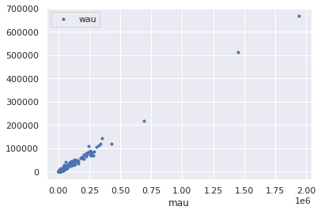
df.plot(x='mau', y='stream30s', ls='', marker='.')
<AxesSubplot:xlabel='mau'>
df.plot(x='stream30s', y='monthly_owner_stream30s', ls='', marker='.')
<AxesSubplot:xlabel='stream30s'>

df.plot(x='stream30s', y='skippers', ls='', marker='.')
<AxesSubplot:xlabel='stream30s'>

quant = 0.99
for target in targets:
cutoff = np.quantile(df[target], quant)
y = df.loc[df[target] < cutoff]
y.plot(kind='hist', y=target, bins=100)

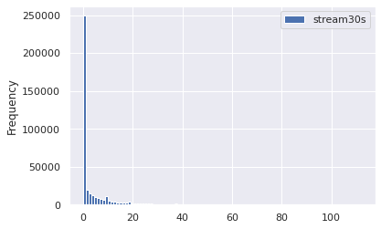


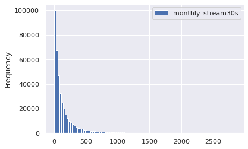

quant = 0.997
for target in sub_targets:
cutoff = np.quantile(df[target], quant)
y = df.loc[df[target] < cutoff]
removed = df.loc[~(df[target] < cutoff)]
print(f"removed items: {removed.shape[0]}")
y.plot(kind='hist', y=target, bins=100)
plt.show()
removed items: 1212
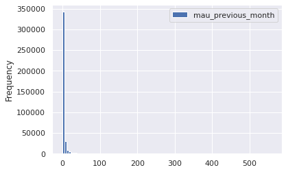
removed items: 1216

removed items: 1211

removed items: 1211
df[sub_targets].describe()
| mau_previous_month | mau_both_months | monthly_stream30s | stream30s | |
|---|---|---|---|---|
| count | 4.033660e+05 | 403366.000000 | 4.033660e+05 | 4.033660e+05 |
| mean | 5.819009e+01 | 12.937065 | 1.260489e+03 | 4.283333e+01 |
| std | 3.827248e+03 | 1240.912979 | 1.062463e+05 | 3.772412e+03 |
| min | 0.000000e+00 | 0.000000 | 2.000000e+00 | 0.000000e+00 |
| 25% | 1.000000e+00 | 1.000000 | 3.100000e+01 | 0.000000e+00 |
| 50% | 2.000000e+00 | 1.000000 | 7.900000e+01 | 0.000000e+00 |
| 75% | 3.000000e+00 | 2.000000 | 1.930000e+02 | 5.000000e+00 |
| max | 1.478684e+06 | 578391.000000 | 4.249733e+07 | 1.513237e+06 |
Independent Variable¶
features
['n_albums',
'n_artists',
'mood_1',
'n_tracks',
'mood_3',
'genre_1',
'genre_2',
'genre_3',
'tokens',
'owner_country',
'n_local_tracks',
'mood_2']
df[features].head()
| n_albums | n_artists | mood_1 | n_tracks | mood_3 | genre_1 | genre_2 | genre_3 | tokens | owner_country | n_local_tracks | mood_2 | |
|---|---|---|---|---|---|---|---|---|---|---|---|---|
| 0 | 7 | 4 | Peaceful | 52 | Somber | Dance & House | New Age | Country & Folk | ["ambient", "music", "therapy", "binaural", "b... | US | 0 | Romantic |
| 1 | 113 | 112 | Excited | 131 | Defiant | Pop | Indie Rock | Alternative | ["good", "living"] | US | 0 | Yearning |
| 2 | 36 | 35 | Lively | 43 | Romantic | Latin | - | - | ["norte\u00f1a"] | US | 0 | Upbeat |
| 3 | 26 | 27 | Excited | 27 | Defiant | Dance & House | Electronica | Pop | [] | US | 1 | Aggressive |
| 4 | 51 | 47 | Excited | 52 | Yearning | Indie Rock | Alternative | Electronica | ["cheesy", "pants"] | US | 0 | Defiant |
con_features = list(df[features].select_dtypes('number').columns)
print(con_features)
des_features = list(df[features].select_dtypes('object').columns)
print(des_features)
['n_albums', 'n_artists', 'n_tracks', 'n_local_tracks']
['mood_1', 'mood_3', 'genre_1', 'genre_2', 'genre_3', 'tokens', 'owner_country', 'mood_2']
df[des_features].describe()
| mood_1 | mood_3 | genre_1 | genre_2 | genre_3 | tokens | owner_country | mood_2 | |
|---|---|---|---|---|---|---|---|---|
| count | 403366 | 403366 | 403366 | 403366 | 403366 | 403366 | 403366 | 403366 |
| unique | 27 | 27 | 26 | 26 | 26 | 192107 | 1 | 27 |
| top | Defiant | Energizing | Indie Rock | Alternative | Pop | [] | US | Energizing |
| freq | 81079 | 56450 | 70571 | 66252 | 78758 | 32568 | 403366 | 51643 |
we will go ahead and remove owner_country (1 unique), owner, and tokens (cardinal) from our feature analysis
id = [df.columns[0]]
targets = list(df.columns[2:11]) + ["monthly_stream30s", "monthly_owner_stream30s"]
features = set(df.columns) - set(targets) - set(id) - set(["owner_country", "owner", "tokens"])
features = list(features)
print(f"id columns: {id}")
print(f"target columns: {targets}")
print(f"feature columns: {features}")
con_features = list(df[features].select_dtypes('number').columns)
print(con_features)
des_features = ['mood_1', 'mood_2', 'mood_3', 'genre_1', 'genre_2', 'genre_3']
print(des_features)
id columns: ['playlist_uri']
target columns: ['streams', 'stream30s', 'dau', 'wau', 'mau', 'mau_previous_month', 'mau_both_months', 'users', 'skippers', 'monthly_stream30s', 'monthly_owner_stream30s']
feature columns: ['n_albums', 'mood_1', 'n_artists', 'n_tracks', 'mood_3', 'genre_1', 'genre_2', 'genre_3', 'n_local_tracks', 'mood_2']
['n_albums', 'n_artists', 'n_tracks', 'n_local_tracks']
['mood_1', 'mood_2', 'mood_3', 'genre_1', 'genre_2', 'genre_3']
Discrete Features¶
df[des_features].describe()
| mood_1 | mood_2 | mood_3 | genre_1 | genre_2 | genre_3 | |
|---|---|---|---|---|---|---|
| count | 403366 | 403366 | 403366 | 403366 | 403366 | 403366 |
| unique | 27 | 27 | 27 | 26 | 26 | 26 |
| top | Defiant | Energizing | Energizing | Indie Rock | Alternative | Pop |
| freq | 81079 | 51643 | 56450 | 70571 | 66252 | 78758 |
df.value_counts(des_features)
mood_1 mood_2 mood_3 genre_1 genre_2 genre_3
Excited Aggressive Energizing Dance & House Electronica Pop 4824
Defiant Cool Energizing Rap R&B Pop 4458
Energizing Cool Rap R&B Pop 4003
Pop R&B 1803
Excited Rap Pop R&B 1225
...
Excited Aggressive Urgent Alternative Electronica Metal 1
Dance & House Pop 1
Upbeat Pop Soundtrack - 1
Indie Rock Alternative - 1
Yearning Urgent Upbeat Soundtrack Pop Rap 1
Length: 138379, dtype: int64
df[des_features[:3]].value_counts()
mood_1 mood_2 mood_3
Defiant Cool Energizing 15125
Energizing Cool 12278
Excited Aggressive Energizing 7564
Defiant Energizing Excited 6672
Excited Energizing 6179
...
Peaceful Urgent Yearning 1
Yearning Cool 1
Excited 1
Fiery 1
Other Urgent Aggressive 1
Length: 9326, dtype: int64
df[des_features[3:]].value_counts()
genre_1 genre_2 genre_3
Rap R&B Pop 15477
Indie Rock Alternative Rock 13102
Dance & House Electronica Pop 10800
Indie Rock Alternative Pop 9981
Electronica 7233
...
New Age Country & Folk Rock 1
Dance & House R&B 1
Rock 1
Soundtrack 1
Traditional Spoken & Audio Religious 1
Length: 6664, dtype: int64
fig, ax = plt.subplots(1, 2, figsize=(10,10))
dff = pd.DataFrame(df[des_features[0]].value_counts()).join(
pd.DataFrame(df[des_features[1]].value_counts())).join(
pd.DataFrame(df[des_features[2]].value_counts()))
dff = dff.reset_index().melt(id_vars='index')
dff.columns = ['mood', 'order', 'count']
sns.barplot(data=dff, hue='order', y='mood', x='count', orient='h', ax=ax[0])
dff = pd.DataFrame(df[des_features[3]].value_counts()).join(
pd.DataFrame(df[des_features[4]].value_counts())).join(
pd.DataFrame(df[des_features[5]].value_counts()))
dff = dff.reset_index().melt(id_vars='index')
dff.columns = ['genre', 'order', 'count']
sns.barplot(data=dff, hue='order', y='genre', x='count', orient='h', ax=ax[1])
plt.tight_layout()

Continuous Features¶
df[con_features].describe()
| n_albums | n_artists | n_tracks | n_local_tracks | |
|---|---|---|---|---|
| count | 403366.000000 | 403366.000000 | 403366.000000 | 403366.000000 |
| mean | 88.224250 | 83.852050 | 201.483432 | 3.084035 |
| std | 133.193118 | 128.152488 | 584.077765 | 40.330266 |
| min | 1.000000 | 1.000000 | 1.000000 | 0.000000 |
| 25% | 19.000000 | 18.000000 | 38.000000 | 0.000000 |
| 50% | 48.000000 | 46.000000 | 84.000000 | 0.000000 |
| 75% | 106.000000 | 100.000000 | 192.000000 | 0.000000 |
| max | 6397.000000 | 5226.000000 | 79984.000000 | 9117.000000 |
quant = 0.999
for target in con_features:
cutoff = np.quantile(df[target], quant)
y = df.loc[df[target] < cutoff]
removed = df.loc[~(df[target] < cutoff)]
print(f"removed items: {removed.shape[0]}")
y.plot(kind='hist', y=target, bins=100, density=True)
plt.show()
removed items: 404

removed items: 405

removed items: 404

removed items: 406

Bootstrapping¶
An example of how we will bootstrap to perform hypothesis tests later on
means = []
ind = con_features[0]
for i in range(100):
boot = random.sample(
list(
df.loc[
(df[ind] > 9)
& (df[ind] < 999)
][ind].values),
k=1000)
means.append(np.mean(boot))
stuff = plt.hist(means, bins=100, density=True)

Dependency¶
Categorical Target¶
sub_targets
['mau_previous_month',
'mau_both_months',
'mau',
'monthly_stream30s',
'stream30s']
for target in sub_targets:
print(f"p99 {target}: {np.quantile(df[target], 0.99)}")
p99 mau_previous_month: 130.0
p99 mau_both_months: 19.0
p99 mau: 143.0
p99 monthly_stream30s: 2843.0
p99 stream30s: 113.0
des_features
['mood_1', 'mood_2', 'mood_3', 'genre_1', 'genre_2', 'genre_3']
Categorical Feature¶
Moods¶
chidf = pd.DataFrame()
target = sub_targets[2]
chidf[target] = df[target]
print(chidf[target].median())
moods = pd.DataFrame()
cutoff = 0.001
pop = chidf[target].values
for ind in des_features:
# ind = des_features[0]
chidf[ind] = df[ind]
for grp_label in df[ind].unique():
# grp_label = df[ind].unique()[0]
grp = chidf.loc[chidf[ind] == grp_label][target].values
chi2, p, m, cTable = stats.median_test(grp, pop, correction=True)
ratio = cTable[0]/cTable[1]
pos = ratio[0]/ratio[1] > 1
moods = pd.concat([moods, pd.DataFrame([[ind, grp_label, chi2, p, cTable, pos, p<cutoff]])])
moods.columns = ['feature', 'group', 'chi', 'p-value', 'cTable', '+', 'reject null']
moods = moods.sort_values('p-value').reset_index(drop=True)
79.0
moods.loc[moods['reject null'] == True]
| feature | group | chi | p-value | cTable | + | reject null | |
|---|---|---|---|---|---|---|---|
| 0 | genre_3 | - | 1725.882036 | 0.000000e+00 | [[16033, 205049], [24090, 198317]] | False | True |
| 1 | genre_2 | - | 1104.759466 | 3.051013e-242 | [[8216, 203517], [12990, 199849]] | False | True |
| 2 | genre_1 | Latin | 651.374931 | 1.122254e-143 | [[9000, 199027], [6012, 204339]] | True | True |
| 3 | mood_1 | Energizing | 611.189037 | 6.167816e-135 | [[10316, 203517], [14071, 199849]] | False | True |
| 4 | genre_1 | Rock | 315.827189 | 1.174487e-70 | [[12514, 201911], [15563, 201455]] | False | True |
| ... | ... | ... | ... | ... | ... | ... | ... |
| 93 | mood_1 | Stirring | 12.333846 | 4.448190e-04 | [[877, 200454], [1044, 202912]] | False | True |
| 94 | mood_1 | Serious | 12.316512 | 4.489689e-04 | [[778, 200454], [935, 202912]] | False | True |
| 95 | mood_2 | Lively | 12.161071 | 4.879735e-04 | [[2588, 200454], [2882, 202912]] | False | True |
| 96 | mood_2 | Somber | 11.618507 | 6.529880e-04 | [[792, 200454], [946, 202912]] | False | True |
| 97 | genre_2 | Dance & House | 10.834697 | 9.961560e-04 | [[12678, 201911], [13196, 201455]] | False | True |
98 rows 7 columns
Chi-Square¶
chidf = pd.DataFrame()
target = sub_targets[2]
chidf[target] = df[target]
quant_value = 0.90
tar_value = np.quantile(chidf[target], quant_value)
chidf[target] = chidf[target] > tar_value
chisum = pd.DataFrame()
cutoff = 0.0001
pop = chidf[target].values
for ind in des_features:
# ind = des_features[0]
chidf[ind] = df[ind]
for grp_label in df[ind].unique():
# grp_label = df[ind].unique()[0]
try:
cTable = chidf.groupby(chidf[ind] == grp_label)[target].value_counts().values.reshape(2,2).T
chi2, p, dof, ex = stats.chi2_contingency(cTable, correction=True, lambda_=None)
ratio = cTable[1]/cTable[0]
pos = ratio[1]/ratio[0]
chisum = pd.concat([chisum, pd.DataFrame([[ind, grp_label, chi2, p, cTable, pos, p<cutoff]])])
except:
pass
chisum.columns = ['feature', 'group', 'chi', 'p-value', 'cTable', 'multiplier', 'reject null']
chisum = chisum.sort_values('p-value').reset_index(drop=True)
Categorical-Categorical Conclusions¶
increasing quant_value will render additional features; as the population performance worsens, new feature/group pairs have an opportunity to increase the multiplier
Best Groups
chisum.loc[(chisum['reject null'] == True) & (chisum['multiplier'] > 2)].sort_values('multiplier', ascending=False)
| feature | group | chi | p-value | cTable | multiplier | reject null | |
|---|---|---|---|---|---|---|---|
| 6 | genre_1 | Children's | 262.624693 | 4.596280e-59 | [[361785, 1286], [39933, 362]] | 2.550270 | True |
| 11 | mood_1 | Other | 197.598843 | 6.979647e-45 | [[361719, 1352], [39952, 343]] | 2.296943 | True |
| 19 | genre_1 | Spoken & Audio | 120.508309 | 4.896128e-28 | [[362147, 924], [40068, 227]] | 2.220451 | True |
| 0 | genre_1 | Latin | 1150.625294 | 3.280867e-252 | [[350782, 12289], [37572, 2723]] | 2.068731 | True |
| 12 | genre_1 | New Age | 166.484617 | 4.335181e-38 | [[361286, 1785], [39896, 399]] | 2.024214 | True |
Worst Groups
chisum.loc[(chisum['reject null'] == True) & (chisum['multiplier'] < 0.8)].sort_values('multiplier', ascending=False)
| feature | group | chi | p-value | cTable | multiplier | reject null | |
|---|---|---|---|---|---|---|---|
| 28 | mood_2 | Sensual | 85.309680 | 2.551113e-20 | [[343873, 19198], [38598, 1697]] | 0.787516 | True |
| 40 | genre_1 | Electronica | 65.249731 | 6.598320e-16 | [[350162, 12909], [39176, 1119]] | 0.774794 | True |
| 2 | genre_1 | Indie Rock | 366.567076 | 1.046303e-81 | [[298164, 64907], [34631, 5664]] | 0.751315 | True |
| 13 | genre_3 | Electronica | 163.908151 | 1.584260e-37 | [[337501, 25570], [38143, 2152]] | 0.744684 | True |
| 21 | mood_1 | Brooding | 109.456909 | 1.288759e-25 | [[346296, 16775], [38893, 1402]] | 0.744152 | True |
| 48 | mood_1 | Gritty | 49.741710 | 1.753777e-12 | [[355800, 7271], [39695, 600]] | 0.739652 | True |
| 14 | mood_1 | Energizing | 162.542129 | 3.149562e-37 | [[340541, 22530], [38438, 1857]] | 0.730229 | True |
| 68 | mood_3 | Other | 27.407286 | 1.648091e-07 | [[361541, 1530], [40196, 99]] | 0.581994 | True |
We would recommend would-be superstar playlist maker construct a playlist with the following attributes:
- Genre 1: Children's
- 2.6x more likely to be in the 90th percentile
- 4.8x more likely to be in the 99th percentile
- Mood 1: Other
- 2.3x more likely to be in the 90th percentile
- 2.4x more likely to be in the 99th percentile
Continuous Feature¶
targets
['streams',
'stream30s',
'dau',
'wau',
'mau',
'mau_previous_month',
'mau_both_months',
'users',
'skippers',
'monthly_stream30s',
'monthly_owner_stream30s']
con_features
['n_albums', 'n_artists', 'n_tracks', 'n_local_tracks']
target = "monthly_stream30s"
print(target)
chidf[target] = df[target]
quant_value = 0.90
tar_value = np.quantile(chidf[target], quant_value)
fig, ax = plt.subplots(figsize=(10,10))
df.loc[df[target] > tar_value].groupby('n_albums')[['wau']].mean().plot(ls='', marker='.', ax=ax)
ax.set_xlim(0, 200)
# ax.set_ylim(0, 100)
monthly_stream30s
(0.0, 200.0)

t-Test¶
For t tests we need to deal with the long tails in the distributions along the independent variable
df[targets].describe()
| streams | stream30s | dau | wau | mau | mau_previous_month | mau_both_months | users | skippers | monthly_stream30s | monthly_owner_stream30s | |
|---|---|---|---|---|---|---|---|---|---|---|---|
| count | 4.033660e+05 | 4.033660e+05 | 403366.000000 | 403366.000000 | 4.033660e+05 | 4.033660e+05 | 403366.000000 | 4.033660e+05 | 403366.000000 | 4.033660e+05 | 403366.000000 |
| mean | 7.101375e+01 | 4.283333e+01 | 4.418265 | 21.784446 | 6.614290e+01 | 5.819009e+01 | 12.937065 | 1.493085e+02 | 2.827749 | 1.260489e+03 | 93.556621 |
| std | 6.492014e+03 | 3.772412e+03 | 358.855685 | 1614.650805 | 4.732580e+03 | 3.827248e+03 | 1240.912979 | 9.247484e+03 | 205.059728 | 1.062463e+05 | 226.250189 |
| min | 0.000000e+00 | 0.000000e+00 | 0.000000 | 0.000000 | 2.000000e+00 | 0.000000e+00 | 0.000000 | 2.000000e+00 | 0.000000 | 2.000000e+00 | 0.000000 |
| 25% | 0.000000e+00 | 0.000000e+00 | 0.000000 | 1.000000 | 2.000000e+00 | 1.000000e+00 | 1.000000 | 2.000000e+00 | 0.000000 | 3.100000e+01 | 6.000000 |
| 50% | 1.000000e+00 | 0.000000e+00 | 0.000000 | 1.000000 | 2.000000e+00 | 2.000000e+00 | 1.000000 | 3.000000e+00 | 0.000000 | 7.900000e+01 | 30.000000 |
| 75% | 8.000000e+00 | 5.000000e+00 | 1.000000 | 2.000000 | 4.000000e+00 | 3.000000e+00 | 2.000000 | 7.000000e+00 | 0.000000 | 1.930000e+02 | 96.000000 |
| max | 2.629715e+06 | 1.513237e+06 | 152929.000000 | 669966.000000 | 1.944150e+06 | 1.478684e+06 | 578391.000000 | 3.455406e+06 | 86162.000000 | 4.249733e+07 | 25904.000000 |
df.loc[df['owner'] != 'spotify'][targets].describe()
| streams | stream30s | dau | wau | mau | mau_previous_month | mau_both_months | users | skippers | monthly_stream30s | monthly_owner_stream30s | |
|---|---|---|---|---|---|---|---|---|---|---|---|
| count | 402967.000000 | 402967.000000 | 402967.000000 | 402967.000000 | 402967.000000 | 402967.000000 | 402967.000000 | 402967.000000 | 402967.000000 | 4.029670e+05 | 402967.000000 |
| mean | 20.968960 | 11.990945 | 1.232421 | 5.275308 | 14.860487 | 13.483665 | 3.029327 | 32.824100 | 0.728640 | 3.543268e+02 | 93.647783 |
| std | 766.262668 | 404.190477 | 41.227771 | 185.706612 | 504.704081 | 548.731437 | 129.629183 | 1157.601711 | 27.054367 | 1.093559e+04 | 226.343585 |
| min | 0.000000 | 0.000000 | 0.000000 | 0.000000 | 2.000000 | 0.000000 | 0.000000 | 2.000000 | 0.000000 | 2.000000e+00 | 0.000000 |
| 25% | 0.000000 | 0.000000 | 0.000000 | 1.000000 | 2.000000 | 1.000000 | 1.000000 | 2.000000 | 0.000000 | 3.100000e+01 | 6.000000 |
| 50% | 1.000000 | 0.000000 | 0.000000 | 1.000000 | 2.000000 | 2.000000 | 1.000000 | 3.000000 | 0.000000 | 7.900000e+01 | 30.000000 |
| 75% | 8.000000 | 5.000000 | 1.000000 | 2.000000 | 4.000000 | 3.000000 | 2.000000 | 7.000000 | 0.000000 | 1.930000e+02 | 96.000000 |
| max | 293283.000000 | 173753.000000 | 18290.000000 | 71891.000000 | 206756.000000 | 190026.000000 | 59049.000000 | 439699.000000 | 11755.000000 | 5.098585e+06 | 25904.000000 |
chidf = pd.DataFrame()
target = "mau"
chidf[target] = df[target]
quant_value = 0.99
tar_value = np.quantile(chidf[target], quant_value)
chidf[target] = chidf[target] > tar_value
welchsum = pd.DataFrame()
cutoff = 0.0001
pop = chidf[target].values
for ind in con_features:
# ind = con_features[0]
chidf[ind] = df[ind]
# for grp_label in df[ind].unique():
# try:
a = []
b = []
for i in range(100):
boot1 = random.sample(
list(
chidf.loc[
(chidf[target] == True)
][ind].values),
k=1000)
boot2 = random.sample(
list(
chidf.loc[
(chidf[target] == False)
][ind].values),
k=1000)
a.append(np.mean(boot1))
b.append(np.mean(boot2))
testt, p = stats.ttest_ind(a, b, equal_var=False)
a_avg = np.mean(a)
b_avg = np.mean(b)
welchsum = pd.concat([welchsum, pd.DataFrame([[ind, testt, p, a_avg, b_avg, p<cutoff]])])
sns.histplot(a, color='tab:orange', label=f"{target} > {tar_value:.0f}")
sns.histplot(b, label=f"{target} <= {tar_value:.0f}")
plt.title(ind)
plt.legend()
plt.show()
# except:
# pass
welchsum.columns = ['feature', 'test stat', 'p-value', 'upper q avg', 'lower q avg', 'reject null']
welchsum = welchsum.sort_values('p-value').reset_index(drop=True)


welchsum
| feature | test stat | p-value | upper q avg | lower q avg | reject null | |
|---|---|---|---|---|---|---|
| 0 | n_tracks | 10.277868 | 4.444906e-20 | 214.33164 | 193.07872 | True |
| 1 | n_artists | 5.367785 | 2.238566e-07 | 84.92819 | 81.98974 | True |
| 2 | n_local_tracks | -2.602519 | 1.006900e-02 | 2.59716 | 2.84386 | False |
| 3 | n_albums | -0.827392 | 4.090126e-01 | 85.92611 | 86.46785 | False |
Let's perform the same test again this time let's say we're only interested in playlists with at least 10 tracks and fewer than 1000 tracks
chidf = pd.DataFrame()
target = sub_targets[2]
chidf[target] = df[target]
chidf['n_tracks'] = df['n_tracks']
quant_value = 0.90
tar_value = np.quantile(chidf[target], quant_value)
chidf[target] = chidf[target] > tar_value
welchsum = pd.DataFrame()
cutoff = 0.0001
pop = chidf[target].values
for ind in con_features:
# ind = con_features[0]
chidf[ind] = df[ind]
# for grp_label in df[ind].unique():
# try:
a = []
b = []
for i in range(100):
boot1 = random.sample(
list(
chidf.loc[
(chidf[target] == True)
& (chidf['n_tracks'] > 9)
& (chidf['n_tracks'] < 999)
][ind].values),
k=1000)
boot2 = random.sample(
list(
chidf.loc[
(chidf[target] == False)
& (chidf['n_tracks'] > 9)
& (chidf['n_tracks'] < 999)
][ind].values),
k=1000)
a.append(np.mean(boot1))
b.append(np.mean(boot2))
testt, p = stats.ttest_ind(a, b, equal_var=False)
a_avg = np.mean(a)
b_avg = np.mean(b)
welchsum = pd.concat([welchsum, pd.DataFrame([[ind, testt, p, a_avg, b_avg, p<cutoff]])])
sns.histplot(a, color='tab:orange', label=f"{target} > {tar_value:.0f}")
sns.histplot(b, label=f"{target} <= {tar_value:.0f}")
plt.title(ind)
plt.legend()
plt.show()
# except:
# pass
welchsum.columns = ['feature', 'test stat', 'p-value', 'upper q avg', 'lower q avg', 'reject null']
welchsum = welchsum.sort_values('p-value').reset_index(drop=True)


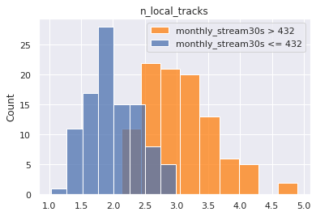
welchsum
| feature | test stat | p-value | upper q avg | lower q avg | reject null | |
|---|---|---|---|---|---|---|
| 0 | n_tracks | 115.613349 | 3.417496e-174 | 231.30575 | 136.10481 | True |
| 1 | n_artists | 97.323391 | 2.230656e-167 | 108.74091 | 70.18516 | True |
| 2 | n_albums | 94.393421 | 2.063549e-160 | 114.38747 | 74.44801 | True |
| 3 | n_local_tracks | 15.122963 | 4.889333e-34 | 3.04746 | 1.99517 | True |
Categorical-Continuous Conclusions¶
Our conclusions are the same. There is a clear delineation between number of tracks, albums, and artists for popular and unpopular playlists
Putting it All Together¶
sub_targets
['mau_previous_month', 'mau_both_months', 'monthly_stream30s', 'stream30s']
des_features
['mood_1', 'mood_2', 'mood_3', 'genre_1', 'genre_2', 'genre_3']
master = pd.DataFrame()
for target in sub_targets:
# target = sub_targets[0]
for quant_value in [0.9, 0.99]:
# quant_value = 0.90
chidf = pd.DataFrame()
chidf[target] = df[target]
tar_value = np.quantile(chidf[target], quant_value)
chidf[target] = chidf[target] > tar_value
chisum = pd.DataFrame()
cutoff = 0.0001
pop = chidf[target].values
for ind in des_features:
# ind = des_features[0]
chidf[ind] = df[ind]
for grp_label in df[ind].unique():
# grp_label = df[ind].unique()[0]
try:
cTable = chidf.groupby(chidf[ind] == grp_label)[target].value_counts().values.reshape(2,2).T
chi2, p, dof, ex = stats.chi2_contingency(cTable, correction=True, lambda_=None)
ratio = cTable[1]/cTable[0]
pos = ratio[1]/ratio[0]
chisum = pd.concat([chisum, pd.DataFrame([[target, quant_value, tar_value, ind, grp_label, chi2, p, cTable, pos, p<cutoff]])])
except:
pass
chisum.columns = ['target', 'upper q', 'upper q value', 'feature', 'group', 'chi', 'p-value', 'cTable', 'multiplier', 'reject null']
chisum = chisum.sort_values('p-value').reset_index(drop=True)
chisum = chisum.loc[(chisum['reject null'] == True) & (chisum['multiplier'] > 2)].sort_values('multiplier', ascending=False)
master = pd.concat((master, chisum))
master
| target | upper q | upper q value | feature | group | chi | p-value | cTable | multiplier | reject null | |
|---|---|---|---|---|---|---|---|---|---|---|
| 2 | mau_previous_month | 0.90 | 9.0 | genre_1 | Latin | 5590.525321 | 0.000000e+00 | [[355002, 11016], [33352, 3996]] | 3.861095 | True |
| 18 | mau_previous_month | 0.90 | 9.0 | genre_1 | Children's | 434.974313 | 1.343518e-96 | [[364768, 1250], [36950, 398]] | 3.143224 | True |
| 1 | mau_previous_month | 0.90 | 9.0 | mood_1 | Lively | 2312.708732 | 0.000000e+00 | [[358030, 7988], [34990, 2358]] | 3.020517 | True |
| 22 | mau_previous_month | 0.90 | 9.0 | genre_1 | Traditional | 357.345743 | 1.065483e-79 | [[364829, 1189], [36989, 359]] | 2.978032 | True |
| 7 | mau_previous_month | 0.90 | 9.0 | genre_2 | Jazz | 1046.212802 | 1.619916e-229 | [[362333, 3685], [36262, 1086]] | 2.944750 | True |
| ... | ... | ... | ... | ... | ... | ... | ... | ... | ... | ... |
| 36 | stream30s | 0.99 | 113.0 | genre_2 | Easy Listening | 26.570340 | 2.541152e-07 | [[397291, 2078], [3952, 45]] | 2.177002 | True |
| 29 | stream30s | 0.99 | 113.0 | genre_2 | Traditional | 39.102302 | 4.021695e-10 | [[396243, 3126], [3930, 67]] | 2.161001 | True |
| 24 | stream30s | 0.99 | 113.0 | genre_3 | Jazz | 46.586071 | 8.768129e-12 | [[395431, 3938], [3914, 83]] | 2.129376 | True |
| 22 | stream30s | 0.99 | 113.0 | mood_2 | Easygoing | 48.122685 | 4.003676e-12 | [[394690, 4679], [3902, 95]] | 2.053711 | True |
| 18 | stream30s | 0.99 | 113.0 | mood_2 | Lively | 53.658720 | 2.385226e-13 | [[394007, 5362], [3889, 108]] | 2.040624 | True |
182 rows 10 columns
master['group'].value_counts()
- 22
Romantic 19
Lively 17
Traditional 16
Children's 16
Jazz 14
Latin 12
Serious 8
Easy Listening 8
Soundtrack 8
Other 7
New Age 7
Holiday 6
Peaceful 6
Spoken & Audio 4
Fiery 3
Tender 3
Easygoing 3
Sophisticated 2
Somber 1
Name: group, dtype: int64
master.loc[master['upper q'] == 0.90]['group'].value_counts()
- 12
Lively 7
Traditional 7
Children's 7
Jazz 7
Latin 7
Romantic 6
Other 5
Serious 5
Holiday 5
Easy Listening 4
Soundtrack 4
Spoken & Audio 3
Fiery 3
Sophisticated 2
New Age 1
Tender 1
Name: group, dtype: int64
sort_key = {i: j for i,j in zip(master['group'].value_counts().index.values, range(master['group'].nunique()))}
master['rank'] = master['group'].apply(lambda x: sort_key[x])
master.sort_values('rank', inplace=True)
# master.drop('rank', axis=1, inplace=True)
master.loc[master['group'] != '-'][:20]
| target | upper q | upper q value | feature | group | chi | p-value | cTable | multiplier | reject null | rank | |
|---|---|---|---|---|---|---|---|---|---|---|---|
| 7 | monthly_stream30s | 0.99 | 2843.0 | mood_2 | Romantic | 146.934024 | 8.112487e-34 | [[389339, 9994], [3810, 223]] | 2.280176 | True | 1 |
| 6 | stream30s | 0.99 | 113.0 | mood_2 | Romantic | 148.026986 | 4.679851e-34 | [[389374, 9995], [3775, 222]] | 2.290974 | True | 1 |
| 4 | monthly_stream30s | 0.99 | 2843.0 | mood_1 | Romantic | 175.072639 | 5.772239e-40 | [[390131, 9202], [3812, 221]] | 2.457919 | True | 1 |
| 2 | mau | 0.99 | 143.0 | mood_1 | Romantic | 202.823985 | 5.053546e-46 | [[390156, 9193], [3787, 230]] | 2.577588 | True | 1 |
| 1 | mau | 0.90 | 9.0 | mood_2 | Romantic | 1531.190216 | 0.000000e+00 | [[355299, 8035], [37850, 2182]] | 2.549159 | True | 1 |
| 8 | mau_previous_month | 0.90 | 9.0 | mood_3 | Romantic | 1013.797108 | 1.800082e-222 | [[357949, 8069], [35525, 1823]] | 2.276429 | True | 1 |
| 4 | mau_previous_month | 0.99 | 130.0 | mood_1 | Romantic | 156.500834 | 6.579992e-36 | [[390127, 9209], [3816, 214]] | 2.375740 | True | 1 |
| 8 | mau | 0.90 | 9.0 | mood_3 | Romantic | 1170.355016 | 1.690629e-256 | [[355429, 7905], [38045, 1987]] | 2.348287 | True | 1 |
| 6 | mau | 0.99 | 143.0 | mood_2 | Romantic | 105.450504 | 9.729814e-25 | [[389336, 10013], [3813, 204]] | 2.080289 | True | 1 |
| 5 | mau_previous_month | 0.99 | 130.0 | mood_3 | Romantic | 112.605179 | 2.633191e-26 | [[389647, 9689], [3827, 203]] | 2.133192 | True | 1 |
| 6 | monthly_stream30s | 0.99 | 2843.0 | mood_3 | Romantic | 149.750731 | 1.965370e-34 | [[389660, 9673], [3814, 219]] | 2.313066 | True | 1 |
| 3 | mau_both_months | 0.99 | 19.0 | mood_1 | Romantic | 109.693770 | 1.143607e-25 | [[390177, 9231], [3766, 192]] | 2.154933 | True | 1 |
| 6 | mau_previous_month | 0.90 | 9.0 | mood_1 | Romantic | 1142.816205 | 1.633755e-250 | [[358408, 7610], [35535, 1813]] | 2.402893 | True | 1 |
| 10 | stream30s | 0.99 | 113.0 | mood_3 | Romantic | 136.025552 | 1.969792e-31 | [[389689, 9680], [3785, 212]] | 2.254825 | True | 1 |
| 5 | mau | 0.99 | 143.0 | mood_3 | Romantic | 122.574129 | 1.728356e-28 | [[389664, 9685], [3810, 207]] | 2.185929 | True | 1 |
| 6 | mau | 0.90 | 9.0 | mood_1 | Romantic | 1328.179994 | 8.498925e-291 | [[355892, 7442], [38051, 1981]] | 2.489700 | True | 1 |
| 6 | mau_previous_month | 0.99 | 130.0 | mood_2 | Romantic | 104.434543 | 1.624732e-24 | [[389323, 10013], [3826, 204]] | 2.073152 | True | 1 |
| 8 | stream30s | 0.99 | 113.0 | mood_1 | Romantic | 139.245969 | 3.891401e-32 | [[390152, 9217], [3791, 206]] | 2.300158 | True | 1 |
| 5 | mau_previous_month | 0.90 | 9.0 | mood_2 | Romantic | 1379.938658 | 4.806442e-302 | [[357822, 8196], [35327, 2021]] | 2.497610 | True | 1 |
| 1 | mau_both_months | 0.90 | 2.0 | mood_1 | Lively | 750.247385 | 3.544959e-165 | [[361665, 8747], [31355, 1599]] | 2.108575 | True | 2 |
sub_targets
['mau_previous_month',
'mau_both_months',
'mau',
'monthly_stream30s',
'stream30s']
master.head()
| target | upper q | upper q value | feature | group | chi | p-value | cTable | multiplier | reject null | rank | |
|---|---|---|---|---|---|---|---|---|---|---|---|
| 12 | stream30s | 0.99 | 113.0 | mood_3 | - | 125.854082 | 3.309444e-29 | [[397434, 1935], [3927, 70]] | 3.661181 | True | 0 |
| 11 | monthly_stream30s | 0.99 | 2843.0 | mood_2 | - | 109.163417 | 1.494430e-25 | [[397529, 1804], [3969, 64]] | 3.553294 | True | 0 |
| 67 | mau_previous_month | 0.90 | 9.0 | genre_1 | - | 95.863487 | 1.230846e-22 | [[365249, 769], [37173, 175]] | 2.236007 | True | 0 |
| 10 | monthly_stream30s | 0.99 | 2843.0 | mood_1 | - | 112.668942 | 2.549855e-26 | [[397605, 1728], [3970, 63]] | 3.651389 | True | 0 |
| 7 | stream30s | 0.99 | 113.0 | mood_1 | - | 141.501726 | 1.249779e-32 | [[397646, 1723], [3929, 68]] | 3.994277 | True | 0 |
master.loc[master['feature'].str.contains('genre')].groupby('group')[['multiplier', 'rank']].mean().sort_values('multiplier', ascending=False)
| multiplier | rank | |
|---|---|---|
| group | ||
| Tender | 3.033890 | 16.0 |
| - | 2.935235 | 0.0 |
| Peaceful | 2.564297 | 13.0 |
| Other | 2.494292 | 10.0 |
| Lively | 2.364492 | 2.0 |
| Romantic | 2.318001 | 1.0 |
| Fiery | 2.244027 | 15.0 |
| Somber | 2.194114 | 19.0 |
| Serious | 2.190306 | 7.0 |
| Easygoing | 2.088064 | 17.0 |
| Sophisticated | 2.055203 | 18.0 |
master['rank'] = master['group'].apply(lambda x: sort_key[x])
master.groupby('group')[['multiplier', 'rank']].mean().sort_values('multiplier', ascending=False)
| multiplier | rank | |
|---|---|---|
| group | ||
| - | 3.049100 | 0.0 |
| Tender | 3.033890 | 16.0 |
| Latin | 3.001282 | 6.0 |
| Children's | 2.871261 | 4.0 |
| Holiday | 2.836528 | 12.0 |
| New Age | 2.754796 | 11.0 |
| Spoken & Audio | 2.610393 | 14.0 |
| Peaceful | 2.564297 | 13.0 |
| Other | 2.425104 | 10.0 |
| Easy Listening | 2.407295 | 8.0 |
| Lively | 2.364492 | 2.0 |
| Traditional | 2.361342 | 3.0 |
| Jazz | 2.342954 | 5.0 |
| Romantic | 2.318001 | 1.0 |
| Fiery | 2.244027 | 15.0 |
| Soundtrack | 2.209295 | 9.0 |
| Somber | 2.194114 | 19.0 |
| Serious | 2.190306 | 7.0 |
| Easygoing | 2.088064 | 17.0 |
| Sophisticated | 2.055203 | 18.0 |
master.to_csv("chi_square_results.csv")
con_master = pd.DataFrame()
for target in sub_targets:
# target = sub_targets[2]
for quant_value in [0.90, 0.99]:
chidf = pd.DataFrame()
chidf[target] = df[target]
chidf['n_tracks'] = df['n_tracks']
# quant_value = 0.90
tar_value = np.quantile(chidf[target], quant_value)
chidf[target] = chidf[target] > tar_value
welchsum = pd.DataFrame()
cutoff = 0.0001
pop = chidf[target].values
for ind in con_features:
# ind = con_features[0]
chidf[ind] = df[ind]
# for grp_label in df[ind].unique():
# try:
a = []
b = []
for i in range(100):
boot1 = random.sample(
list(
chidf.loc[
(chidf[target] == True)
& (chidf['n_tracks'] > 9)
& (chidf['n_tracks'] < 999)
][ind].values),
k=1000)
boot2 = random.sample(
list(
chidf.loc[
(chidf[target] == False)
& (chidf['n_tracks'] > 9)
& (chidf['n_tracks'] < 999)
][ind].values),
k=1000)
a.append(np.mean(boot1))
b.append(np.mean(boot2))
testt, p = stats.ttest_ind(a, b, equal_var=False)
a_avg = np.mean(a)
b_avg = np.mean(b)
welchsum = pd.concat([welchsum, pd.DataFrame([[target, quant_value, ind, testt, p, a_avg, b_avg, p<cutoff]])])
print(target, quant_value)
sns.histplot(a, color='tab:orange', label=f"{target} > {tar_value:.0f}")
sns.histplot(b, label=f"{target} <= {tar_value:.0f}")
plt.title(ind)
plt.legend()
plt.show()
# except:
# pass
welchsum.columns = ['target', 'quantile', 'feature', 'test stat', 'p-value', 'upper q avg', 'lower q avg', 'reject null']
welchsum = welchsum.sort_values('p-value').reset_index(drop=True)
con_master = pd.concat((con_master, welchsum))
con_master
mau_previous_month 0.9

mau_previous_month 0.9

mau_previous_month 0.9
mau_previous_month 0.9
mau_previous_month 0.99

mau_previous_month 0.99
mau_previous_month 0.99

mau_previous_month 0.99
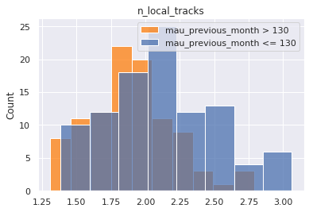
mau_both_months 0.9

mau_both_months 0.9
mau_both_months 0.9

mau_both_months 0.9

mau_both_months 0.99
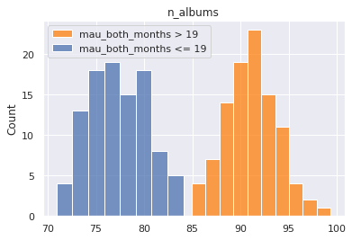
mau_both_months 0.99

mau_both_months 0.99

mau_both_months 0.99
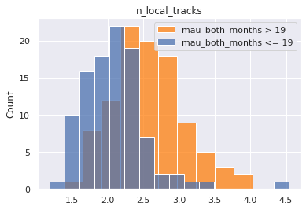
mau 0.9

mau 0.9

mau 0.9
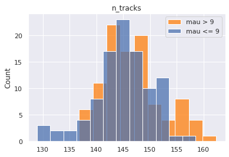
mau 0.9
mau 0.99

mau 0.99

mau 0.99

mau 0.99

monthly_stream30s 0.9

monthly_stream30s 0.9

monthly_stream30s 0.9

monthly_stream30s 0.9
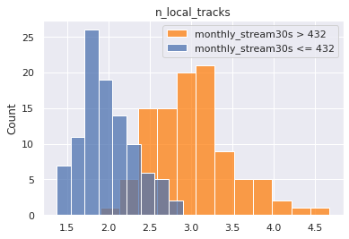
monthly_stream30s 0.99

monthly_stream30s 0.99

monthly_stream30s 0.99

monthly_stream30s 0.99

stream30s 0.9
stream30s 0.9
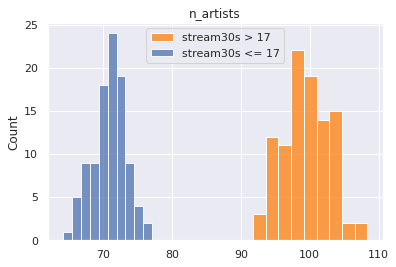
stream30s 0.9

stream30s 0.9

stream30s 0.99
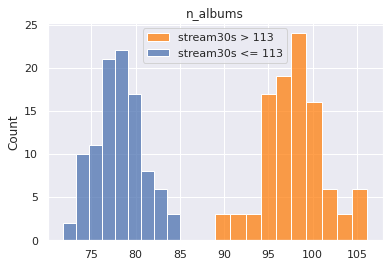
stream30s 0.99

stream30s 0.99
stream30s 0.99
| target | quantile | feature | test stat | p-value | upper q avg | lower q avg | reject null | |
|---|---|---|---|---|---|---|---|---|
| 0 | mau_previous_month | 0.90 | n_albums | -23.264501 | 1.517148e-58 | 69.19828 | 78.75130 | True |
| 1 | mau_previous_month | 0.90 | n_artists | -19.090166 | 9.131465e-47 | 67.78967 | 74.42581 | True |
| 2 | mau_previous_month | 0.90 | n_local_tracks | -8.591563 | 3.210041e-15 | 1.68487 | 2.13934 | True |
| 3 | mau_previous_month | 0.90 | n_tracks | 4.900218 | 2.017971e-06 | 149.27223 | 145.40243 | True |
| 0 | mau_previous_month | 0.99 | n_tracks | 19.149805 | 1.101097e-46 | 157.92259 | 144.56996 | True |
| 1 | mau_previous_month | 0.99 | n_artists | 9.668152 | 4.508161e-18 | 77.26126 | 73.71656 | True |
| 2 | mau_previous_month | 0.99 | n_local_tracks | -4.443426 | 1.514586e-05 | 1.89286 | 2.11507 | True |
| 3 | mau_previous_month | 0.99 | n_albums | 1.862787 | 6.399527e-02 | 78.89529 | 78.24458 | False |
| 0 | mau_both_months | 0.90 | n_tracks | 49.521659 | 1.017659e-108 | 181.22258 | 141.77758 | True |
| 1 | mau_both_months | 0.90 | n_albums | 44.662168 | 7.684105e-105 | 96.16066 | 75.92092 | True |
| 2 | mau_both_months | 0.90 | n_artists | 44.359056 | 9.041628e-103 | 90.79743 | 72.15272 | True |
| 3 | mau_both_months | 0.90 | n_local_tracks | 13.737285 | 1.342361e-30 | 2.78731 | 1.97483 | True |
| 0 | mau_both_months | 0.99 | n_tracks | 43.038413 | 5.369851e-102 | 175.40377 | 145.00116 | True |
| 1 | mau_both_months | 0.99 | n_artists | 38.561073 | 1.471847e-93 | 88.24552 | 73.26184 | True |
| 2 | mau_both_months | 0.99 | n_albums | 34.193348 | 1.157948e-84 | 91.12947 | 77.20951 | True |
| 3 | mau_both_months | 0.99 | n_local_tracks | 6.722576 | 1.917602e-10 | 2.56940 | 2.10191 | True |
| 0 | mau | 0.90 | n_albums | -28.035344 | 2.209065e-70 | 67.80156 | 79.48186 | True |
| 1 | mau | 0.90 | n_artists | -23.052205 | 7.021697e-58 | 66.03151 | 74.84314 | True |
| 2 | mau | 0.90 | n_local_tracks | -9.891800 | 5.454116e-19 | 1.57376 | 2.12208 | True |
| 3 | mau | 0.90 | n_tracks | 1.804461 | 7.267873e-02 | 146.48072 | 145.09618 | False |
| 0 | mau | 0.99 | n_tracks | 12.627041 | 3.513887e-27 | 155.01260 | 145.83850 | True |
| 1 | mau | 0.99 | n_artists | 7.983360 | 1.264344e-13 | 76.43482 | 73.73105 | True |
| 2 | mau | 0.99 | n_local_tracks | -6.172898 | 4.276522e-09 | 1.76129 | 2.07410 | True |
| 3 | mau | 0.99 | n_albums | 1.442954 | 1.506168e-01 | 78.53564 | 77.96526 | False |
| 0 | monthly_stream30s | 0.90 | n_tracks | 116.726338 | 2.452095e-164 | 232.32350 | 136.98027 | True |
| 1 | monthly_stream30s | 0.90 | n_artists | 92.368904 | 2.578108e-157 | 108.07236 | 70.08310 | True |
| 2 | monthly_stream30s | 0.90 | n_albums | 86.396836 | 1.619061e-153 | 114.85460 | 74.19437 | True |
| 3 | monthly_stream30s | 0.90 | n_local_tracks | 17.521798 | 4.704385e-40 | 3.01074 | 1.97501 | True |
| 0 | monthly_stream30s | 0.99 | n_tracks | 72.651978 | 1.071572e-144 | 199.50667 | 144.19406 | True |
| 1 | monthly_stream30s | 0.99 | n_albums | 40.530369 | 8.810322e-98 | 95.06869 | 77.58295 | True |
| 2 | monthly_stream30s | 0.99 | n_artists | 41.165863 | 1.560381e-97 | 90.42413 | 74.19337 | True |
| 3 | monthly_stream30s | 0.99 | n_local_tracks | 6.120756 | 5.135842e-09 | 2.37637 | 2.04232 | True |
| 0 | stream30s | 0.90 | n_tracks | 90.846516 | 2.364112e-160 | 207.07344 | 139.38590 | True |
| 1 | stream30s | 0.90 | n_albums | 68.563722 | 6.972523e-137 | 105.31471 | 75.42986 | True |
| 2 | stream30s | 0.90 | n_artists | 68.402932 | 2.057561e-132 | 99.37767 | 70.87686 | True |
| 3 | stream30s | 0.90 | n_local_tracks | 14.588639 | 6.290309e-32 | 2.89681 | 1.93857 | True |
| 0 | stream30s | 0.99 | n_tracks | 77.043302 | 2.214047e-149 | 201.25989 | 144.76511 | True |
| 1 | stream30s | 0.99 | n_artists | 47.632996 | 2.794842e-107 | 92.60628 | 73.13416 | True |
| 2 | stream30s | 0.99 | n_albums | 44.900868 | 5.246137e-103 | 98.01367 | 78.12288 | True |
| 3 | stream30s | 0.99 | n_local_tracks | 4.520672 | 1.062456e-05 | 2.29328 | 2.05241 | True |
con_master
| target | quantile | feature | test stat | p-value | upper q avg | lower q avg | reject null | |
|---|---|---|---|---|---|---|---|---|
| 0 | mau_previous_month | 0.90 | n_albums | -23.264501 | 1.517148e-58 | 69.19828 | 78.75130 | True |
| 1 | mau_previous_month | 0.90 | n_artists | -19.090166 | 9.131465e-47 | 67.78967 | 74.42581 | True |
| 2 | mau_previous_month | 0.90 | n_local_tracks | -8.591563 | 3.210041e-15 | 1.68487 | 2.13934 | True |
| 3 | mau_previous_month | 0.90 | n_tracks | 4.900218 | 2.017971e-06 | 149.27223 | 145.40243 | True |
| 0 | mau_previous_month | 0.99 | n_tracks | 19.149805 | 1.101097e-46 | 157.92259 | 144.56996 | True |
| 1 | mau_previous_month | 0.99 | n_artists | 9.668152 | 4.508161e-18 | 77.26126 | 73.71656 | True |
| 2 | mau_previous_month | 0.99 | n_local_tracks | -4.443426 | 1.514586e-05 | 1.89286 | 2.11507 | True |
| 3 | mau_previous_month | 0.99 | n_albums | 1.862787 | 6.399527e-02 | 78.89529 | 78.24458 | False |
| 0 | mau_both_months | 0.90 | n_tracks | 49.521659 | 1.017659e-108 | 181.22258 | 141.77758 | True |
| 1 | mau_both_months | 0.90 | n_albums | 44.662168 | 7.684105e-105 | 96.16066 | 75.92092 | True |
| 2 | mau_both_months | 0.90 | n_artists | 44.359056 | 9.041628e-103 | 90.79743 | 72.15272 | True |
| 3 | mau_both_months | 0.90 | n_local_tracks | 13.737285 | 1.342361e-30 | 2.78731 | 1.97483 | True |
| 0 | mau_both_months | 0.99 | n_tracks | 43.038413 | 5.369851e-102 | 175.40377 | 145.00116 | True |
| 1 | mau_both_months | 0.99 | n_artists | 38.561073 | 1.471847e-93 | 88.24552 | 73.26184 | True |
| 2 | mau_both_months | 0.99 | n_albums | 34.193348 | 1.157948e-84 | 91.12947 | 77.20951 | True |
| 3 | mau_both_months | 0.99 | n_local_tracks | 6.722576 | 1.917602e-10 | 2.56940 | 2.10191 | True |
| 0 | mau | 0.90 | n_albums | -28.035344 | 2.209065e-70 | 67.80156 | 79.48186 | True |
| 1 | mau | 0.90 | n_artists | -23.052205 | 7.021697e-58 | 66.03151 | 74.84314 | True |
| 2 | mau | 0.90 | n_local_tracks | -9.891800 | 5.454116e-19 | 1.57376 | 2.12208 | True |
| 3 | mau | 0.90 | n_tracks | 1.804461 | 7.267873e-02 | 146.48072 | 145.09618 | False |
| 0 | mau | 0.99 | n_tracks | 12.627041 | 3.513887e-27 | 155.01260 | 145.83850 | True |
| 1 | mau | 0.99 | n_artists | 7.983360 | 1.264344e-13 | 76.43482 | 73.73105 | True |
| 2 | mau | 0.99 | n_local_tracks | -6.172898 | 4.276522e-09 | 1.76129 | 2.07410 | True |
| 3 | mau | 0.99 | n_albums | 1.442954 | 1.506168e-01 | 78.53564 | 77.96526 | False |
| 0 | monthly_stream30s | 0.90 | n_tracks | 116.726338 | 2.452095e-164 | 232.32350 | 136.98027 | True |
| 1 | monthly_stream30s | 0.90 | n_artists | 92.368904 | 2.578108e-157 | 108.07236 | 70.08310 | True |
| 2 | monthly_stream30s | 0.90 | n_albums | 86.396836 | 1.619061e-153 | 114.85460 | 74.19437 | True |
| 3 | monthly_stream30s | 0.90 | n_local_tracks | 17.521798 | 4.704385e-40 | 3.01074 | 1.97501 | True |
| 0 | monthly_stream30s | 0.99 | n_tracks | 72.651978 | 1.071572e-144 | 199.50667 | 144.19406 | True |
| 1 | monthly_stream30s | 0.99 | n_albums | 40.530369 | 8.810322e-98 | 95.06869 | 77.58295 | True |
| 2 | monthly_stream30s | 0.99 | n_artists | 41.165863 | 1.560381e-97 | 90.42413 | 74.19337 | True |
| 3 | monthly_stream30s | 0.99 | n_local_tracks | 6.120756 | 5.135842e-09 | 2.37637 | 2.04232 | True |
| 0 | stream30s | 0.90 | n_tracks | 90.846516 | 2.364112e-160 | 207.07344 | 139.38590 | True |
| 1 | stream30s | 0.90 | n_albums | 68.563722 | 6.972523e-137 | 105.31471 | 75.42986 | True |
| 2 | stream30s | 0.90 | n_artists | 68.402932 | 2.057561e-132 | 99.37767 | 70.87686 | True |
| 3 | stream30s | 0.90 | n_local_tracks | 14.588639 | 6.290309e-32 | 2.89681 | 1.93857 | True |
| 0 | stream30s | 0.99 | n_tracks | 77.043302 | 2.214047e-149 | 201.25989 | 144.76511 | True |
| 1 | stream30s | 0.99 | n_artists | 47.632996 | 2.794842e-107 | 92.60628 | 73.13416 | True |
| 2 | stream30s | 0.99 | n_albums | 44.900868 | 5.246137e-103 | 98.01367 | 78.12288 | True |
| 3 | stream30s | 0.99 | n_local_tracks | 4.520672 | 1.062456e-05 | 2.29328 | 2.05241 | True |
con_master.to_csv("t_test_results.csv")
Models (Multi-Feature Analysis)¶
Deciles - Random Forest¶
sub_targets
['mau_previous_month',
'mau_both_months',
'mau',
'monthly_stream30s',
'stream30s']
target = sub_targets[-2]
y = df[target].values
labels = y.copy()
names = []
for idx, quant in zip(range(11), np.linspace(0, 1, num=11)):
if idx == 0:
prev = quant
continue
if idx == 1:
labels[labels <= np.quantile(y, quant)] = idx
names += [f"less than {np.quantile(y, quant):.0f} listens"]
else:
labels[(labels > np.quantile(y, prev))
&(labels <= np.quantile(y, quant))] = idx
names += [f"{np.quantile(y, prev):.0f} < listens <= {np.quantile(y, quant):.0f}"]
prev = quant
y = labels
names
['less than 13 listens',
'13 < listens <= 24',
'24 < listens <= 38',
'38 < listens <= 55',
'55 < listens <= 79',
'79 < listens <= 111',
'111 < listens <= 159',
'159 < listens <= 240',
'240 < listens <= 432',
'432 < listens <= 42497334']
X = df[des_features + con_features]
enc = OneHotEncoder()
std = StandardScaler()
X_cat = enc.fit_transform(X[des_features]).toarray()
X_con = std.fit_transform(X[con_features])
X = np.hstack((X_con, X_cat))
X_train, X_test, y_train, y_test = train_test_split(X, y, random_state=42, train_size=0.8)
model = RandomForestClassifier()
model.fit(X_train, y_train)
RandomForestClassifier()
y_hat_test = model.predict(X_test)
print(f"Train Acc: {accuracy_score(y_test, y_hat_test):.2f}")
print(f"Test Acc: {accuracy_score(y_test, y_hat_test):.2f}")
Train Acc: 0.14
Test Acc: 0.14
print(classification_report(y_test, y_hat_test, zero_division=0))
precision recall f1-score support
1 0.19 0.26 0.22 8363
2 0.13 0.13 0.13 7866
3 0.13 0.12 0.13 8173
4 0.10 0.09 0.10 7773
5 0.11 0.10 0.10 8252
6 0.11 0.09 0.10 7976
7 0.11 0.10 0.10 8018
8 0.12 0.10 0.11 8185
9 0.14 0.14 0.14 8009
10 0.20 0.26 0.23 8059
accuracy 0.14 80674
macro avg 0.13 0.14 0.14 80674
weighted avg 0.13 0.14 0.14 80674
fig, ax = plt.subplots(1, 1, figsize = (10, 10))
sns.heatmap(confusion_matrix(y_test, y_hat_test), annot=True, ax=ax, xticklabels=names, yticklabels=names)
<AxesSubplot:>

# grab feature importances
imp = model.feature_importances_
# their std
std = np.std([tree.feature_importances_ for tree in model.estimators_], axis=0)
# build feature names
feature_names = con_features + list(enc.get_feature_names_out())
# create new dataframe
feat = pd.DataFrame([feature_names, imp, std]).T
feat.columns = ['feature', 'importance', 'std']
feat = feat.sort_values('importance', ascending=False)
feat = feat.reset_index(drop=True)
feat.dropna(inplace=True)
feat.head(20)
| feature | importance | std | |
|---|---|---|---|
| 0 | n_tracks | 0.152852 | 0.006907 |
| 1 | n_albums | 0.135581 | 0.007403 |
| 2 | n_artists | 0.133666 | 0.007421 |
| 3 | n_local_tracks | 0.038311 | 0.005365 |
| 4 | genre_2_Pop | 0.011607 | 0.000991 |
| 5 | genre_3_Pop | 0.01145 | 0.003792 |
| 6 | genre_3_Alternative | 0.010917 | 0.002062 |
| 7 | genre_3_Rock | 0.009709 | 0.002517 |
| 8 | mood_3_Excited | 0.009644 | 0.000618 |
| 9 | mood_2_Excited | 0.009271 | 0.000782 |
| 10 | genre_2_Alternative | 0.009073 | 0.003263 |
| 11 | mood_3_Yearning | 0.00904 | 0.001758 |
| 12 | genre_3_Indie Rock | 0.00876 | 0.000795 |
| 13 | mood_3_Defiant | 0.008758 | 0.000674 |
| 14 | mood_3_Urgent | 0.008581 | 0.000502 |
| 15 | mood_2_Defiant | 0.008537 | 0.000787 |
| 16 | mood_3_Empowering | 0.008351 | 0.001044 |
| 17 | mood_3_Sensual | 0.008343 | 0.000575 |
| 18 | mood_2_Yearning | 0.008315 | 0.00197 |
| 19 | genre_2_Rock | 0.008229 | 0.000827 |
Quartiles - Random Forest¶
### Create Categories
y = df[target].values
labels = y.copy()
names = []
lim = 5
for idx, quant in zip(range(lim), np.linspace(0, 1, num=lim)):
if idx == 0:
prev = quant
continue
if idx == 1:
labels[labels <= np.quantile(y, quant)] = idx
names += [f"less than {np.quantile(y, quant):.0f} listens"]
else:
labels[(labels > np.quantile(y, prev))
&(labels <= np.quantile(y, quant))] = idx
names += [f"{np.quantile(y, prev):.0f} < listens <= {np.quantile(y, quant):.0f}"]
prev = quant
y = labels
### Create Training Data
X = df[des_features + con_features]
enc = OneHotEncoder()
std = StandardScaler()
X_cat = enc.fit_transform(X[des_features]).toarray()
X_con = std.fit_transform(X[con_features])
X = np.hstack((X_con, X_cat))
X_train, X_test, y_train, y_test = train_test_split(X, y, random_state=42, train_size=0.8)
### Train Model
model = RandomForestClassifier()
model.fit(X_train, y_train)
### Asses Performance
y_hat_test = model.predict(X_test)
y_hat_train = model.predict(X_train)
print(f"Train Acc: {accuracy_score(y_train, y_hat_train):.2f}")
print(f"Test Acc: {accuracy_score(y_test, y_hat_test):.2f}")
print(classification_report(y_test, y_hat_test, zero_division=0))
fig, ax = plt.subplots(1, 1, figsize = (8,7))
sns.heatmap(confusion_matrix(y_test, y_hat_test), annot=True, ax=ax)
Train Acc: 0.99
Test Acc: 0.33
precision recall f1-score support
1 0.37 0.43 0.40 20461
2 0.27 0.23 0.25 19966
3 0.27 0.23 0.25 20082
4 0.39 0.44 0.41 20165
accuracy 0.33 80674
macro avg 0.33 0.33 0.33 80674
weighted avg 0.33 0.33 0.33 80674
<AxesSubplot:>

Binary, 90th Percentile, Random Forest¶
### Create Categories
y = df[target].values
labels = y.copy()
names = []
weights = y.copy()
weights.dtype = 'float'
lim = 5
dom_class_weight = 1 / (lim - 1 - 1)
for idx, quant in zip(range(lim), np.linspace(0, 1, num=lim)):
if idx < lim - 2:
prev = quant
continue
elif idx == lim - 2:
weights[y <= np.quantile(y, quant)] = dom_class_weight
labels[labels <= np.quantile(y, quant)] = idx
names += [f"less than {np.quantile(y, quant):.0f} listens"]
else:
labels[(labels > np.quantile(y, prev))
&(labels <= np.quantile(y, quant))] = idx
weights[(y > np.quantile(y, prev))
&(y <= np.quantile(y, quant))] = 1.0
names += [f"{np.quantile(y, prev):.0f} < listens <= {np.quantile(y, quant):.0f}"]
prev = quant
y = labels
### Create Training Data
X = df[des_features + con_features]
enc = OneHotEncoder()
std = StandardScaler()
X_cat = enc.fit_transform(X[des_features]).toarray()
X_con = std.fit_transform(X[con_features])
X = np.hstack((X_con, X_cat))
X_train, X_test, y_train, y_test, weight_train, weight_test = train_test_split(X, y, weights, random_state=42, train_size=0.8)
### Strateification Code
# strat_y0_idx = np.array(random.sample(list(np.argwhere(y_train==3).reshape(-1)), np.unique(y_train, return_counts=True)[1][1]))
# strat_y1_idx = np.argwhere(y_train==4).reshape(-1)
# strat_idx = np.hstack((strat_y0_idx, strat_y1_idx))
# X_train = X_train[strat_idx]
# y_train = y_train[strat_idx]
### Train Model
model = RandomForestClassifier()
model.fit(X_train, y_train)
### Assess Performance
y_hat_test = model.predict(X_test)
y_hat_train = model.predict(X_train)
print(f"Train Acc: {accuracy_score(y_train, y_hat_train):.2f}")
print(f"Test Acc: {accuracy_score(y_test, y_hat_test):.2f}")
print(classification_report(y_test, y_hat_test, zero_division=0))
fig, ax = plt.subplots(1, 1, figsize = (8,7))
sns.heatmap(confusion_matrix(y_test, y_hat_test), annot=True, ax=ax)
/home/wbeckner/anaconda3/envs/py39/lib/python3.9/site-packages/sklearn/linear_model/_logistic.py:814: ConvergenceWarning: lbfgs failed to converge (status=1):
STOP: TOTAL NO. of ITERATIONS REACHED LIMIT.
Increase the number of iterations (max_iter) or scale the data as shown in:
https://scikit-learn.org/stable/modules/preprocessing.html
Please also refer to the documentation for alternative solver options:
https://scikit-learn.org/stable/modules/linear_model.html#logistic-regression
n_iter_i = _check_optimize_result(
Train Acc: 0.76
Test Acc: 0.76
precision recall f1-score support
3 0.76 0.98 0.86 60509
4 0.58 0.08 0.13 20165
accuracy 0.76 80674
macro avg 0.67 0.53 0.50 80674
weighted avg 0.72 0.76 0.68 80674
<AxesSubplot:>
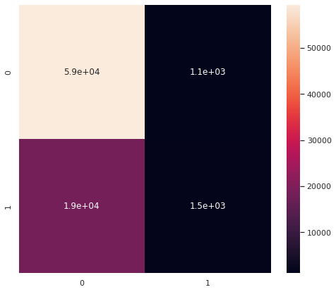
Forward Selection Model¶
### y
print(target)
y = df[target].values
labels = y.copy()
names = []
weights = y.copy()
weights.dtype = 'float'
lim = 11
dom_class_weight = 1 / (lim - 1 - 1)
for idx, quant in zip(range(lim), np.linspace(0, 1, num=lim)):
if idx < lim - 2:
prev = quant
continue
elif idx == lim - 2:
weights[y <= np.quantile(y, quant)] = dom_class_weight
labels[labels <= np.quantile(y, quant)] = 0
names += [f"less than {np.quantile(y, quant):.0f} listens"]
else:
labels[(labels > np.quantile(y, prev))
& (labels <= np.quantile(y, quant))] = 1
weights[(y > np.quantile(y, prev))
& (y <= np.quantile(y, quant))] = 1.0
names += [f"{np.quantile(y, prev):.0f} < listens <= {np.quantile(y, quant):.0f}"]
prev = quant
y = labels
#### X
X = df[des_features + con_features]
enc = OneHotEncoder()
std = StandardScaler()
X_cat = enc.fit_transform(X[des_features]).toarray()
X_con = std.fit_transform(X[con_features])
X = np.hstack((np.ones((X_con.shape[0], 1)), X_con, X_cat))
feature_names = ['intercept'] + con_features + list(enc.get_feature_names_out())
data = pd.DataFrame(X, columns=feature_names)
print(names)
monthly_stream30s
['less than 432 listens', '432 < listens <= 42497334']
def add_feature(feature_names, basemodel, data, y, r2max=0, model='linear', disp=0):
feature_max = None
bestsum = None
newmodel = None
for feature in feature_names:
basemodel[feature] = data[feature]
X2 = basemodel.values
est = Logit(y, X2)
est2 = est.fit(disp=0)
summ = est2.summary()
score = float(str(pd.DataFrame(summ.tables[0]).loc[3, 3]))
if (score > r2max) and not (est2.pvalues > cutoff).any():
r2max = score
feature_max = feature
bestsum = est2.summary()
newmodel = basemodel.copy()
if disp == 1:
print(f"new r2max, {feature_max}, {r2max}")
basemodel.drop(labels = feature, axis = 1, inplace = True)
return r2max, feature_max, bestsum, newmodel
candidates = feature_names.copy()
basemodel = pd.DataFrame()
r2max = 0
with open("canidates.txt", "w+") as f:
file_data = f.read()
for i in candidates:
f.write(f"{i}\n")
basemodel.to_csv("basemodel.csv")
with open("canidates.txt", "r") as f:
# file_data = f.read()
new = []
for line in f:
current_place = line[:-1]
new.append(current_place)
new = pd.read_csv("basemodel.csv", index_col=0)
with open("fwd_selection_results.txt", "r+") as f:
for line in f:
pass
lastline = line[:-1]
stuff = lastline.split(", ")
new = float(stuff[-1])
new
0.04052
while True:
newr2max, feature_max, bestsum, newmodel = add_feature(
feature_names=candidates,
basemodel=basemodel,
data=data,
y=y,
r2max=r2max)
if newr2max > r2max:
r2max = newr2max
print(f"new r2max, {feature_max}, {r2max}")
with open("fwd_selection_results.txt", "a+") as f:
file_data = f.read()
f.write(f"new r2max, {feature_max}, {r2max}\n")
candidates.remove(feature_max)
with open("canidates.txt", "w+") as f:
file_data = f.read()
for i in candidates:
f.write(f"{i}\n")
basemodel = newmodel
basemodel.to_csv("basemodel.csv")
continue
else:
break
new r2max, n_albums, 0.02614
new r2max, genre_1_Latin, 0.03093
new r2max, genre_1_Indie Rock, 0.03274
new r2max, genre_1_Rap, 0.03431
new r2max, genre_1_Dance & House, 0.03568
new r2max, genre_1_Rock, 0.03674
new r2max, mood_1_Energizing, 0.03772
new r2max, genre_1_Children's, 0.03863
new r2max, mood_1_Tender, 0.03931
new r2max, mood_1_Other, 0.03995
new r2max, n_tracks, 0.04052
---------------------------------------------------------------------------
KeyboardInterrupt Traceback (most recent call last)
Input In [675], in <module>
1 while True:
----> 2 newr2max, feature_max, bestsum, newmodel = add_feature(
3 feature_names=candidates,
4 basemodel=basemodel,
5 data=data,
6 y=y,
7 r2max=r2max)
8 if newr2max > r2max:
9 r2max = newr2max
Input In [669], in add_feature(feature_names, basemodel, data, y, r2max, model, disp)
8 est = Logit(y, X2)
9 est2 = est.fit(disp=0)
---> 10 summ = est2.summary()
11 score = float(str(pd.DataFrame(summ.tables[0]).loc[3, 3]))
12 if (score > r2max) and not (est2.pvalues > cutoff).any():
File ~/anaconda3/envs/py39/lib/python3.9/site-packages/statsmodels/discrete/discrete_model.py:4015, in BinaryResults.summary(self, yname, xname, title, alpha, yname_list)
4012 @Appender(DiscreteResults.summary.__doc__)
4013 def summary(self, yname=None, xname=None, title=None, alpha=.05,
4014 yname_list=None):
-> 4015 smry = super(BinaryResults, self).summary(yname, xname, title, alpha,
4016 yname_list)
4017 fittedvalues = self.model.cdf(self.fittedvalues)
4018 absprederror = np.abs(self.model.endog - fittedvalues)
File ~/anaconda3/envs/py39/lib/python3.9/site-packages/statsmodels/discrete/discrete_model.py:3769, in DiscreteResults.summary(self, yname, xname, title, alpha, yname_list)
3731 """
3732 Summarize the Regression Results.
3733
(...)
3755 statsmodels.iolib.summary.Summary : Class that hold summary results.
3756 """
3758 top_left = [('Dep. Variable:', None),
3759 ('Model:', [self.model.__class__.__name__]),
3760 ('Method:', ['MLE']),
(...)
3763 ('converged:', ["%s" % self.mle_retvals['converged']]),
3764 ]
3766 top_right = [('No. Observations:', None),
3767 ('Df Residuals:', None),
3768 ('Df Model:', None),
-> 3769 ('Pseudo R-squ.:', ["%#6.4g" % self.prsquared]),
3770 ('Log-Likelihood:', None),
3771 ('LL-Null:', ["%#8.5g" % self.llnull]),
3772 ('LLR p-value:', ["%#6.4g" % self.llr_pvalue])
3773 ]
3775 if hasattr(self, 'cov_type'):
3776 top_left.append(('Covariance Type:', [self.cov_type]))
File ~/anaconda3/envs/py39/lib/python3.9/site-packages/pandas/_libs/properties.pyx:37, in pandas._libs.properties.CachedProperty.__get__()
File ~/anaconda3/envs/py39/lib/python3.9/site-packages/statsmodels/discrete/discrete_model.py:3511, in DiscreteResults.prsquared(self)
3506 @cache_readonly
3507 def prsquared(self):
3508 """
3509 McFadden's pseudo-R-squared. `1 - (llf / llnull)`
3510 """
-> 3511 return 1 - self.llf/self.llnull
File ~/anaconda3/envs/py39/lib/python3.9/site-packages/pandas/_libs/properties.pyx:37, in pandas._libs.properties.CachedProperty.__get__()
File ~/anaconda3/envs/py39/lib/python3.9/site-packages/statsmodels/discrete/discrete_model.py:3604, in DiscreteResults.llnull(self)
3601 res_null = mod_null.fit(start_params=sp_null, **opt_kwds)
3602 else:
3603 # this should be a reasonably method case across versions
-> 3604 res_null = mod_null.fit(start_params=sp_null, method='nm',
3605 warn_convergence=False,
3606 maxiter=10000, disp=0)
3607 res_null = mod_null.fit(start_params=res_null.params, method='bfgs',
3608 warn_convergence=False,
3609 maxiter=10000, disp=0)
3611 if getattr(self, '_attach_nullmodel', False) is not False:
File ~/anaconda3/envs/py39/lib/python3.9/site-packages/statsmodels/discrete/discrete_model.py:1983, in Logit.fit(self, start_params, method, maxiter, full_output, disp, callback, **kwargs)
1980 @Appender(DiscreteModel.fit.__doc__)
1981 def fit(self, start_params=None, method='newton', maxiter=35,
1982 full_output=1, disp=1, callback=None, **kwargs):
-> 1983 bnryfit = super().fit(start_params=start_params,
1984 method=method,
1985 maxiter=maxiter,
1986 full_output=full_output,
1987 disp=disp,
1988 callback=callback,
1989 **kwargs)
1991 discretefit = LogitResults(self, bnryfit)
1992 return BinaryResultsWrapper(discretefit)
File ~/anaconda3/envs/py39/lib/python3.9/site-packages/statsmodels/discrete/discrete_model.py:230, in DiscreteModel.fit(self, start_params, method, maxiter, full_output, disp, callback, **kwargs)
227 else:
228 pass # TODO: make a function factory to have multiple call-backs
--> 230 mlefit = super().fit(start_params=start_params,
231 method=method,
232 maxiter=maxiter,
233 full_output=full_output,
234 disp=disp,
235 callback=callback,
236 **kwargs)
238 return mlefit
File ~/anaconda3/envs/py39/lib/python3.9/site-packages/statsmodels/base/model.py:563, in LikelihoodModel.fit(self, start_params, method, maxiter, full_output, disp, fargs, callback, retall, skip_hessian, **kwargs)
560 del kwargs["use_t"]
562 optimizer = Optimizer()
--> 563 xopt, retvals, optim_settings = optimizer._fit(f, score, start_params,
564 fargs, kwargs,
565 hessian=hess,
566 method=method,
567 disp=disp,
568 maxiter=maxiter,
569 callback=callback,
570 retall=retall,
571 full_output=full_output)
572 # Restore cov_type, cov_kwds and use_t
573 optim_settings.update(kwds)
File ~/anaconda3/envs/py39/lib/python3.9/site-packages/statsmodels/base/optimizer.py:241, in Optimizer._fit(self, objective, gradient, start_params, fargs, kwargs, hessian, method, maxiter, full_output, disp, callback, retall)
238 fit_funcs.update(extra_fit_funcs)
240 func = fit_funcs[method]
--> 241 xopt, retvals = func(objective, gradient, start_params, fargs, kwargs,
242 disp=disp, maxiter=maxiter, callback=callback,
243 retall=retall, full_output=full_output,
244 hess=hessian)
246 optim_settings = {'optimizer': method, 'start_params': start_params,
247 'maxiter': maxiter, 'full_output': full_output,
248 'disp': disp, 'fargs': fargs, 'callback': callback,
249 'retall': retall, "extra_fit_funcs": extra_fit_funcs}
250 optim_settings.update(kwargs)
File ~/anaconda3/envs/py39/lib/python3.9/site-packages/statsmodels/base/optimizer.py:728, in _fit_nm(f, score, start_params, fargs, kwargs, disp, maxiter, callback, retall, full_output, hess)
726 ftol = kwargs.setdefault('ftol', 0.0001)
727 maxfun = kwargs.setdefault('maxfun', None)
--> 728 retvals = optimize.fmin(f, start_params, args=fargs, xtol=xtol,
729 ftol=ftol, maxiter=maxiter, maxfun=maxfun,
730 full_output=full_output, disp=disp, retall=retall,
731 callback=callback)
732 if full_output:
733 if not retall:
File ~/anaconda3/envs/py39/lib/python3.9/site-packages/scipy/optimize/optimize.py:580, in fmin(func, x0, args, xtol, ftol, maxiter, maxfun, full_output, disp, retall, callback, initial_simplex)
471 """
472 Minimize a function using the downhill simplex algorithm.
473
(...)
570
571 """
572 opts = {'xatol': xtol,
573 'fatol': ftol,
574 'maxiter': maxiter,
(...)
577 'return_all': retall,
578 'initial_simplex': initial_simplex}
--> 580 res = _minimize_neldermead(func, x0, args, callback=callback, **opts)
581 if full_output:
582 retlist = res['x'], res['fun'], res['nit'], res['nfev'], res['status']
File ~/anaconda3/envs/py39/lib/python3.9/site-packages/scipy/optimize/optimize.py:768, in _minimize_neldermead(func, x0, args, callback, maxiter, maxfev, disp, return_all, initial_simplex, xatol, fatol, adaptive, bounds, **unknown_options)
766 if bounds is not None:
767 xr = np.clip(xr, lower_bound, upper_bound)
--> 768 fxr = func(xr)
769 doshrink = 0
771 if fxr < fsim[0]:
File ~/anaconda3/envs/py39/lib/python3.9/site-packages/scipy/optimize/optimize.py:464, in _wrap_function.<locals>.function_wrapper(x, *wrapper_args)
462 def function_wrapper(x, *wrapper_args):
463 ncalls[0] += 1
--> 464 return function(np.copy(x), *(wrapper_args + args))
File ~/anaconda3/envs/py39/lib/python3.9/site-packages/statsmodels/base/model.py:531, in LikelihoodModel.fit.<locals>.f(params, *args)
530 def f(params, *args):
--> 531 return -self.loglike(params, *args) / nobs
File ~/anaconda3/envs/py39/lib/python3.9/site-packages/statsmodels/discrete/discrete_model.py:1872, in Logit.loglike(self, params)
1870 q = 2*self.endog - 1
1871 X = self.exog
-> 1872 return np.sum(np.log(self.cdf(q*np.dot(X,params))))
File <__array_function__ internals>:5, in dot(*args, **kwargs)
KeyboardInterrupt:
candidates
['n_artists',
'n_local_tracks',
'mood_1_-',
'mood_1_Aggressive',
'mood_1_Brooding',
'mood_1_Cool',
'mood_1_Defiant',
'mood_1_Easygoing',
'mood_1_Empowering',
'mood_1_Excited',
'mood_1_Fiery',
'mood_1_Gritty',
'mood_1_Lively',
'mood_1_Melancholy',
'mood_1_Peaceful',
'mood_1_Romantic',
'mood_1_Rowdy',
'mood_1_Sensual',
'mood_1_Sentimental',
'mood_1_Serious',
'mood_1_Somber',
'mood_1_Sophisticated',
'mood_1_Stirring',
'mood_1_Upbeat',
'mood_1_Urgent',
'mood_1_Yearning',
'mood_2_-',
'mood_2_Aggressive',
'mood_2_Brooding',
'mood_2_Cool',
'mood_2_Defiant',
'mood_2_Easygoing',
'mood_2_Empowering',
'mood_2_Energizing',
'mood_2_Excited',
'mood_2_Fiery',
'mood_2_Gritty',
'mood_2_Lively',
'mood_2_Melancholy',
'mood_2_Other',
'mood_2_Peaceful',
'mood_2_Romantic',
'mood_2_Rowdy',
'mood_2_Sensual',
'mood_2_Sentimental',
'mood_2_Serious',
'mood_2_Somber',
'mood_2_Sophisticated',
'mood_2_Stirring',
'mood_2_Tender',
'mood_2_Upbeat',
'mood_2_Urgent',
'mood_2_Yearning',
'mood_3_-',
'mood_3_Aggressive',
'mood_3_Brooding',
'mood_3_Cool',
'mood_3_Defiant',
'mood_3_Easygoing',
'mood_3_Empowering',
'mood_3_Energizing',
'mood_3_Excited',
'mood_3_Fiery',
'mood_3_Gritty',
'mood_3_Lively',
'mood_3_Melancholy',
'mood_3_Other',
'mood_3_Peaceful',
'mood_3_Romantic',
'mood_3_Rowdy',
'mood_3_Sensual',
'mood_3_Sentimental',
'mood_3_Serious',
'mood_3_Somber',
'mood_3_Sophisticated',
'mood_3_Stirring',
'mood_3_Tender',
'mood_3_Upbeat',
'mood_3_Urgent',
'mood_3_Yearning',
'genre_1_-',
'genre_1_Alternative',
'genre_1_Blues',
'genre_1_Classical',
'genre_1_Country & Folk',
'genre_1_Easy Listening',
'genre_1_Electronica',
'genre_1_Holiday',
'genre_1_Jazz',
'genre_1_Metal',
'genre_1_New Age',
'genre_1_Other',
'genre_1_Pop',
'genre_1_Punk',
'genre_1_R&B',
'genre_1_Reggae',
'genre_1_Religious',
'genre_1_Soundtrack',
'genre_1_Spoken & Audio',
'genre_1_Traditional',
'genre_2_-',
'genre_2_Alternative',
'genre_2_Blues',
"genre_2_Children's",
'genre_2_Classical',
'genre_2_Country & Folk',
'genre_2_Dance & House',
'genre_2_Easy Listening',
'genre_2_Electronica',
'genre_2_Holiday',
'genre_2_Indie Rock',
'genre_2_Jazz',
'genre_2_Latin',
'genre_2_Metal',
'genre_2_New Age',
'genre_2_Other',
'genre_2_Pop',
'genre_2_Punk',
'genre_2_R&B',
'genre_2_Rap',
'genre_2_Reggae',
'genre_2_Religious',
'genre_2_Rock',
'genre_2_Soundtrack',
'genre_2_Spoken & Audio',
'genre_2_Traditional',
'genre_3_-',
'genre_3_Alternative',
'genre_3_Blues',
"genre_3_Children's",
'genre_3_Classical',
'genre_3_Country & Folk',
'genre_3_Dance & House',
'genre_3_Easy Listening',
'genre_3_Electronica',
'genre_3_Holiday',
'genre_3_Indie Rock',
'genre_3_Jazz',
'genre_3_Latin',
'genre_3_Metal',
'genre_3_New Age',
'genre_3_Other',
'genre_3_Pop',
'genre_3_Punk',
'genre_3_R&B',
'genre_3_Rap',
'genre_3_Reggae',
'genre_3_Religious',
'genre_3_Rock',
'genre_3_Soundtrack',
'genre_3_Spoken & Audio',
'genre_3_Traditional']
X2 = basemodel.values
est = Logit(y, X2)
est2 = est.fit(disp=0)
summ = est2.summary()
res_table = summ.tables[1]
res_df = pd.DataFrame(res_table.data)
cols = res_df.iloc[0]
cols = [str(i) for i in cols]
res_df.drop(0, axis=0, inplace=True)
res_df.set_index(0, inplace=True)
res_df.columns = cols[1:]
res_df.index = basemodel.columns
res_df
| coef | std err | z | P>|z| | [0.025 | 0.975] | |
|---|---|---|---|---|---|---|
| intercept | -2.0979 | 0.008 | -273.128 | 0.000 | -2.113 | -2.083 |
| n_albums | 0.3430 | 0.006 | 61.214 | 0.000 | 0.332 | 0.354 |
| genre_1_Latin | 0.6929 | 0.023 | 30.536 | 0.000 | 0.648 | 0.737 |
| genre_1_Indie Rock | -0.4654 | 0.016 | -28.755 | 0.000 | -0.497 | -0.434 |
| genre_1_Rap | -0.3804 | 0.016 | -23.163 | 0.000 | -0.413 | -0.348 |
| genre_1_Dance & House | -0.3978 | 0.022 | -18.022 | 0.000 | -0.441 | -0.355 |
| genre_1_Rock | -0.3562 | 0.023 | -15.423 | 0.000 | -0.402 | -0.311 |
| mood_1_Energizing | -0.3623 | 0.025 | -14.323 | 0.000 | -0.412 | -0.313 |
| genre_1_Children's | 0.9479 | 0.061 | 15.652 | 0.000 | 0.829 | 1.067 |
| mood_1_Tender | 0.6629 | 0.047 | 14.006 | 0.000 | 0.570 | 0.756 |
| mood_1_Other | 0.8465 | 0.062 | 13.611 | 0.000 | 0.725 | 0.968 |
| n_tracks | 0.0688 | 0.006 | 11.549 | 0.000 | 0.057 | 0.080 |
| mood_2_Serious | 0.0046 | 0.080 | 0.058 | 0.954 | -0.151 | 0.161 |
Binary, 99th Percentile¶
### Create Categories
y = df[target].values
labels = y.copy()
names = []
weights = y.copy()
weights.dtype = 'float'
lim = 11
dom_class_weight = 1 / (lim - 1 - 1)
for idx, quant in zip(range(lim), np.linspace(0, 1, num=lim)):
if idx < lim - 2:
prev = quant
continue
elif idx == lim - 2:
weights[y <= np.quantile(y, quant)] = dom_class_weight
labels[labels <= np.quantile(y, quant)] = idx
names += [f"less than {np.quantile(y, quant):.0f} listens"]
else:
labels[(labels > np.quantile(y, prev))
&(labels <= np.quantile(y, quant))] = idx
weights[(y > np.quantile(y, prev))
&(y <= np.quantile(y, quant))] = 1.0
names += [f"{np.quantile(y, prev):.0f} < listens <= {np.quantile(y, quant):.0f}"]
prev = quant
y = labels
### Create Training Data
X = df[des_features + con_features]
enc = OneHotEncoder()
std = StandardScaler()
X_cat = enc.fit_transform(X[des_features]).toarray()
X_con = std.fit_transform(X[con_features])
X = np.hstack((X_con, X_cat))
X_train, X_test, y_train, y_test, weight_train, weight_test = train_test_split(X, y, weights, random_state=42, train_size=0.8)
### Train Model
model = RandomForestClassifier()
model.fit(X_train, y_train, weight_train)
### Asses Performance
y_hat_test = model.predict(X_test)
y_hat_train = model.predict(X_train)
print(f"Train Acc: {accuracy_score(y_train, y_hat_train):.2f}")
print(f"Test Acc: {accuracy_score(y_test, y_hat_test):.2f}")
print(classification_report(y_test, y_hat_test, zero_division=0))
fig, ax = plt.subplots(1, 1, figsize = (8,7))
sns.heatmap(confusion_matrix(y_test, y_hat_test), annot=True, ax=ax)
Train Acc: 1.00
Test Acc: 0.90
precision recall f1-score support
9 0.90 0.99 0.94 72615
10 0.27 0.03 0.05 8059
accuracy 0.90 80674
macro avg 0.59 0.51 0.50 80674
weighted avg 0.84 0.90 0.86 80674
<AxesSubplot:>

Other Metrics¶
- 30s listens/tot listens (listen conversions) also like a bounce rate
- Users both months/users prev month (user conversions)
- combine with mau > mau_previous_month
- Best small time performers (less than X total monthly listens + high conversion)
- Best new user playlist (owner has only 1 popular playlist)
Listen and User Conversions, MAU Growing¶
df['listen_conversions'] = df['stream30s'] / df['streams']
df['listen_conversions'].fillna(value=0, inplace=True)
df['user_retention'] = df['mau_both_months'] / df['mau_previous_month']
df['user_retention'].fillna(value=0, inplace=True)
df['user_conversions'] = df['mau'] / df['users']
df['user_conversions'].fillna(value=0, inplace=True)
df['mau_growing'] = df['mau'] > df['mau_previous_month']
df['mau_growth'] = df['mau'] / df['mau_previous_month']
df['mau_growth'].fillna(value=0, inplace=True)
df['mau_growth'].replace([np.inf, -np.inf], 1, inplace=True)
new_metrics = ['listen_conversions', 'user_conversions', 'user_retention', 'mau_growth']
df[new_metrics].describe()
| listen_conversions | user_conversions | user_retention | mau_growth | |
|---|---|---|---|---|
| count | 403366.000000 | 403366.000000 | 403366.000000 | 403366.000000 |
| mean | 0.334701 | 0.724072 | 0.571070 | 1.513218 |
| std | 0.399968 | 0.261708 | 0.392073 | 17.459669 |
| min | 0.000000 | 0.020348 | 0.000000 | 0.031250 |
| 25% | 0.000000 | 0.500000 | 0.200000 | 1.000000 |
| 50% | 0.000000 | 0.666667 | 0.500000 | 1.066667 |
| 75% | 0.730769 | 1.000000 | 1.000000 | 2.000000 |
| max | 1.000000 | 1.000000 | 1.000000 | 7859.000000 |
df['listen_conversions'].plot(kind='hist', bins=10)
<AxesSubplot:ylabel='Frequency'>

df['user_conversions'].plot(kind='hist', bins=10)
<AxesSubplot:ylabel='Frequency'>

df['user_retention'].plot(kind='hist', bins=10)
<AxesSubplot:ylabel='Frequency'>

df.loc[df['mau_growth'] < 10]['mau_growth'].plot(kind='hist', bins=20)
<AxesSubplot:ylabel='Frequency'>

df['mau_growing'].value_counts().plot(kind='bar')
<AxesSubplot:>

df['new_success'] = df[new_metrics].apply(lambda x: (x > 0.5) if (max(x) == 1) else (x > 1)).all(axis=1)
df['new_success'].value_counts()
False 362869
True 40497
Name: new_success, dtype: int64
df.loc[df['new_success'] == True]
| playlist_uri | owner | streams | stream30s | dau | wau | mau | mau_previous_month | mau_both_months | users | skippers | owner_country | n_tracks | n_local_tracks | n_artists | n_albums | monthly_stream30s | monthly_owner_stream30s | tokens | genre_1 | genre_2 | genre_3 | mood_1 | mood_2 | mood_3 | success | listen_conversions | user_retention | user_conversions | mau_growing | mau_growth | new_success | |
|---|---|---|---|---|---|---|---|---|---|---|---|---|---|---|---|---|---|---|---|---|---|---|---|---|---|---|---|---|---|---|---|---|
| 14 | spotify:user:9a3580868994077be27d244788d494cd:... | 9a3580868994077be27d244788d494cd | 28 | 15 | 1 | 1 | 2 | 1 | 1 | 2 | 0 | US | 321 | 0 | 170 | 205 | 83 | 77 | ["sunny", "daze"] | Alternative | Indie Rock | Electronica | Brooding | Excited | Sensual | False | 0.535714 | 1.0 | 1.000000 | True | 2.000000 | True |
| 18 | spotify:user:7abbdbd3119687473b8f2986e73e2ad6:... | 7abbdbd3119687473b8f2986e73e2ad6 | 9 | 5 | 1 | 2 | 2 | 1 | 1 | 2 | 0 | US | 373 | 8 | 1 | 1 | 18 | 11 | [] | Pop | Alternative | Indie Rock | Empowering | Excited | Urgent | False | 0.555556 | 1.0 | 1.000000 | True | 2.000000 | True |
| 20 | spotify:user:838141e861005b6a955cb389c19671a5:... | 838141e861005b6a955cb389c19671a5 | 32 | 25 | 2 | 3 | 4 | 3 | 3 | 5 | 1 | US | 904 | 0 | 81 | 125 | 327 | 253 | ["metalcore", "forever"] | Punk | Metal | Rock | Defiant | Urgent | Aggressive | False | 0.781250 | 1.0 | 0.800000 | True | 1.333333 | True |
| 36 | spotify:user:2217942070bcaa5f1e651e27744b4402:... | 2217942070bcaa5f1e651e27744b4402 | 18 | 17 | 1 | 2 | 4 | 3 | 3 | 5 | 1 | US | 141 | 1 | 122 | 131 | 567 | 0 | ["chill"] | Rap | Dance & House | Alternative | Excited | Defiant | Energizing | False | 0.944444 | 1.0 | 0.800000 | True | 1.333333 | True |
| 59 | spotify:user:dfde15dd16b4ad87a75036276b4c9f66:... | dfde15dd16b4ad87a75036276b4c9f66 | 5 | 5 | 1 | 1 | 2 | 1 | 1 | 3 | 0 | US | 84 | 0 | 73 | 78 | 254 | 239 | ["vegas"] | Rock | Pop | R&B | Upbeat | Excited | Empowering | False | 1.000000 | 1.0 | 0.666667 | True | 2.000000 | True |
| ... | ... | ... | ... | ... | ... | ... | ... | ... | ... | ... | ... | ... | ... | ... | ... | ... | ... | ... | ... | ... | ... | ... | ... | ... | ... | ... | ... | ... | ... | ... | ... | ... |
| 403329 | spotify:user:358b83239c6a2557fbfb053330d49a41:... | 358b83239c6a2557fbfb053330d49a41 | 4 | 4 | 1 | 1 | 3 | 1 | 1 | 3 | 0 | US | 33 | 0 | 28 | 31 | 271 | 32 | ["one", "dirt", "road"] | Country & Folk | Rock | - | Yearning | Empowering | Gritty | False | 1.000000 | 1.0 | 1.000000 | True | 3.000000 | True |
| 403336 | spotify:user:a0781a2de47beb8bd693f3022f316327:... | a0781a2de47beb8bd693f3022f316327 | 856 | 855 | 3 | 10 | 10 | 5 | 5 | 10 | 0 | US | 168 | 0 | 6 | 9 | 33747 | 1391 | ["evning", "song"] | - | - | - | - | - | - | True | 0.998832 | 1.0 | 1.000000 | True | 2.000000 | True |
| 403338 | spotify:user:06f6dd666f1bbf9148c792b87ed4d22f:... | 06f6dd666f1bbf9148c792b87ed4d22f | 5 | 4 | 1 | 1 | 2 | 1 | 1 | 2 | 0 | US | 59 | 0 | 34 | 46 | 21 | 9 | ["rhc"] | Religious | Pop | Alternative | Empowering | Upbeat | Brooding | False | 0.800000 | 1.0 | 1.000000 | True | 2.000000 | True |
| 403348 | spotify:user:c6af258245d55221cebedb1175f08d83:... | c6af258245d55221cebedb1175f08d83 | 13 | 11 | 1 | 1 | 2 | 1 | 1 | 2 | 0 | US | 31 | 0 | 30 | 29 | 208 | 206 | ["zumba", "val", "silva", "playlist"] | Latin | Pop | Dance & House | Aggressive | Excited | Defiant | False | 0.846154 | 1.0 | 1.000000 | True | 2.000000 | True |
| 403353 | spotify:user:5461b6b460dd512d7b4fd4fb488f3520:... | 5461b6b460dd512d7b4fd4fb488f3520 | 2 | 2 | 1 | 1 | 2 | 1 | 1 | 2 | 0 | US | 146 | 0 | 115 | 123 | 405 | 321 | ["myfavorites"] | Indie Rock | Electronica | Alternative | Yearning | Energizing | Brooding | False | 1.000000 | 1.0 | 1.000000 | True | 2.000000 | True |
40497 rows 32 columns
chidf = pd.DataFrame()
target = 'new_success'
chidf[target] = df[target]
# quant_value = 0.90
# tar_value = np.quantile(chidf[target], quant_value)
# chidf[target] = chidf[target] > tar_value
chisum = pd.DataFrame()
cutoff = 0.0001
pop = chidf[target].values
for ind in des_features:
# ind = des_features[0]
chidf[ind] = df[ind]
for grp_label in df[ind].unique():
# grp_label = df[ind].unique()[0]
try:
cTable = chidf.groupby(chidf[ind] == grp_label)[target].value_counts().values.reshape(2,2).T
chi2, p, dof, ex = stats.chi2_contingency(cTable, correction=True, lambda_=None)
ratio = cTable[1]/cTable[0]
pos = ratio[1]/ratio[0]
chisum = pd.concat([chisum, pd.DataFrame([[ind, grp_label, chi2, p, cTable, pos, p<cutoff]])])
except:
pass
chisum.columns = ['feature', 'group', 'chi', 'p-value', 'cTable', 'multiplier', 'reject null']
chisum = chisum.sort_values('p-value').reset_index(drop=True)
chisum.loc[chisum['reject null'] == True].sort_values('multiplier', ascending=False)
| feature | group | chi | p-value | cTable | multiplier | reject null | |
|---|---|---|---|---|---|---|---|
| 6 | genre_1 | Dance & House | 231.225731 | 3.221322e-52 | [[334768, 28101], [36487, 4010]] | 1.309267 | True |
| 2 | genre_1 | Indie Rock | 386.328998 | 5.212769e-86 | [[300809, 62060], [31986, 8511]] | 1.289733 | True |
| 3 | mood_1 | Excited | 289.821405 | 5.438394e-65 | [[306376, 56493], [32871, 7626]] | 1.258184 | True |
| 4 | mood_1 | Defiant | 285.014998 | 6.064223e-64 | [[291222, 71647], [31065, 9432]] | 1.234123 | True |
| 16 | genre_2 | Electronica | 124.733558 | 5.820843e-29 | [[335186, 27683], [36772, 3725]] | 1.226540 | True |
| ... | ... | ... | ... | ... | ... | ... | ... |
| 70 | mood_1 | Somber | 30.852148 | 2.784538e-08 | [[361994, 875], [40456, 41]] | 0.419270 | True |
| 0 | genre_3 | - | 1404.327669 | 2.410008e-307 | [[324633, 38236], [38610, 1887]] | 0.414947 | True |
| 1 | genre_2 | - | 861.809401 | 1.968786e-189 | [[342541, 20328], [39619, 878]] | 0.373430 | True |
| 24 | mood_1 | Other | 81.806778 | 1.500630e-19 | [[361232, 1637], [40439, 58]] | 0.316494 | True |
| 42 | genre_1 | Spoken & Audio | 58.779116 | 1.764037e-14 | [[361755, 1114], [40460, 37]] | 0.296965 | True |
101 rows 7 columns
chisum.loc[chisum['reject null'] == True].sort_values('multiplier', ascending=True)[:20]
| feature | group | chi | p-value | cTable | multiplier | reject null | |
|---|---|---|---|---|---|---|---|
| 42 | genre_1 | Spoken & Audio | 58.779116 | 1.764037e-14 | [[361755, 1114], [40460, 37]] | 0.296965 | True |
| 24 | mood_1 | Other | 81.806778 | 1.500630e-19 | [[361232, 1637], [40439, 58]] | 0.316494 | True |
| 1 | genre_2 | - | 861.809401 | 1.968786e-189 | [[342541, 20328], [39619, 878]] | 0.373430 | True |
| 0 | genre_3 | - | 1404.327669 | 2.410008e-307 | [[324633, 38236], [38610, 1887]] | 0.414947 | True |
| 70 | mood_1 | Somber | 30.852148 | 2.784538e-08 | [[361994, 875], [40456, 41]] | 0.419270 | True |
| 73 | genre_1 | Easy Listening | 30.613123 | 3.149562e-08 | [[361984, 885], [40455, 42]] | 0.424642 | True |
| 40 | mood_2 | - | 60.796108 | 6.330294e-15 | [[361087, 1782], [40411, 86]] | 0.431224 | True |
| 43 | mood_1 | - | 57.600397 | 3.211607e-14 | [[361161, 1708], [40414, 83]] | 0.434269 | True |
| 37 | mood_3 | - | 64.489845 | 9.703118e-16 | [[360957, 1912], [40404, 93]] | 0.434536 | True |
| 48 | genre_1 | Children's | 52.188042 | 5.043231e-13 | [[361298, 1571], [40420, 77]] | 0.438111 | True |
| 32 | mood_1 | Easygoing | 72.784800 | 1.445861e-17 | [[360451, 2418], [40371, 126]] | 0.465255 | True |
| 56 | mood_3 | Serious | 43.083601 | 5.245004e-11 | [[361404, 1465], [40420, 77]] | 0.469948 | True |
| 59 | genre_2 | Other | 41.614387 | 1.111721e-10 | [[361446, 1423], [40422, 75]] | 0.471283 | True |
| 82 | mood_2 | Other | 25.423296 | 4.603257e-07 | [[361970, 899], [40449, 48]] | 0.477800 | True |
| 60 | genre_1 | Traditional | 39.228043 | 3.770852e-10 | [[361402, 1467], [40416, 81]] | 0.493733 | True |
| 39 | genre_3 | Easy Listening | 61.357952 | 4.758655e-15 | [[360552, 2317], [40368, 129]] | 0.497272 | True |
| 47 | genre_2 | Easy Listening | 53.106215 | 3.159911e-13 | [[360858, 2011], [40385, 112]] | 0.497648 | True |
| 65 | mood_2 | Stirring | 34.226638 | 4.905289e-09 | [[361548, 1321], [40423, 74]] | 0.501033 | True |
| 57 | mood_1 | Serious | 42.044137 | 8.923632e-11 | [[361247, 1622], [40406, 91]] | 0.501590 | True |
| 10 | genre_1 | Soundtrack | 169.038371 | 1.200050e-38 | [[356345, 6524], [40127, 370]] | 0.503642 | True |
chidf = pd.DataFrame()
target = "success"
chidf[target] = df[target]
# chidf.iloc[:int(chidf.shape[0]/2),:] = True
# chidf.iloc[int(chidf.shape[0]/2):,:] = False
# quant_value = 0.99
# tar_value = np.quantile(chidf[target], quant_value)
# chidf[target] = chidf[target] > tar_value
welchsum = pd.DataFrame()
cutoff = 0.0001
pop = chidf[target].values
for ind in con_features:
# ind = con_features[0]
chidf[ind] = df[ind]
# for grp_label in df[ind].unique():
# try:
a = []
b = []
for i in range(100):
boot1 = random.sample(
list(
chidf.loc[
(chidf[target] == True)
][ind].values),
k=1000)
boot2 = random.sample(
list(
chidf.loc[
(chidf[target] == False)
][ind].values),
k=1000)
a.append(np.mean(boot1))
b.append(np.mean(boot2))
testt, p = stats.ttest_ind(a, b, equal_var=False)
a_avg = np.mean(a)
b_avg = np.mean(b)
welchsum = pd.concat([welchsum, pd.DataFrame([[ind, testt, p, a_avg, b_avg, p<cutoff]])])
sns.histplot(a, color='tab:orange', label=f"{target} == True")
sns.histplot(b, label=f"{target} == False")
plt.title(ind)
plt.legend()
plt.show()
# except:
# pass
welchsum.columns = ['feature', 'test stat', 'p-value', 'upper q avg', 'lower q avg', 'reject null']
welchsum = welchsum.sort_values('p-value').reset_index(drop=True)


sns.histplot(df, x='listen_conversions', hue='mau_growing', bins=10)
<AxesSubplot:xlabel='listen_conversions', ylabel='Count'>
sns.histplot(df, x='user_conversions', hue='mau_growing', bins=10)
<AxesSubplot:xlabel='user_conversions', ylabel='Count'>

sns.histplot(df, x='user_conversions', hue=df['dau'] > 1, bins=10)
<AxesSubplot:xlabel='user_conversions', ylabel='Count'>
(df['mau'] > 5).describe()
count 403366
unique 2
top False
freq 338256
Name: mau, dtype: object
np.quantile(df['mau'], 0.9)
9.0
Considering outliers¶
df = df.loc[df[targets].apply(lambda x: (x < 3*x.std()) if (x.dtype == int or x.dtype == float) else x).all(axis=1)]
df = df.loc[df['owner'] != 'spotify']
Multiple Criteria for Success¶
df['success'] = df[sub_targets].apply(lambda x: x > np.quantile(x, 0.75)).all(axis=1)
fig, ax = plt.subplots(figsize=(10,10))
df.loc[df['success'] == True].groupby('n_tracks')[['wau']].mean().plot(ls='', marker='.', ax=ax)
ax.set_xlim(0, 200)
ax.set_ylim(0, 5000)
(0.0, 5000.0)

chidf = pd.DataFrame()
target = 'success'
chidf[target] = df[target]
# quant_value = 0.90
# tar_value = np.quantile(chidf[target], quant_value)
# chidf[target] = chidf[target] > tar_value
chisum = pd.DataFrame()
cutoff = 0.0001
pop = chidf[target].values
for ind in des_features:
# ind = des_features[0]
chidf[ind] = df[ind]
for grp_label in df[ind].unique():
# grp_label = df[ind].unique()[0]
try:
cTable = chidf.groupby(chidf[ind] == grp_label)[target].value_counts().values.reshape(2,2).T
chi2, p, dof, ex = stats.chi2_contingency(cTable, correction=True, lambda_=None)
ratio = cTable[1]/cTable[0]
pos = ratio[1]/ratio[0]
chisum = pd.concat([chisum, pd.DataFrame([[ind, grp_label, chi2, p, cTable, pos, p<cutoff]])])
except:
pass
chisum.columns = ['feature', 'group', 'chi', 'p-value', 'cTable', 'multiplier', 'reject null']
chisum = chisum.sort_values('p-value').reset_index(drop=True)
chisum.loc[chisum['reject null'] == True].sort_values('multiplier', ascending=False)
| feature | group | chi | p-value | cTable | multiplier | reject null | |
|---|---|---|---|---|---|---|---|
| 0 | genre_1 | Latin | 3516.528142 | 0.000000e+00 | [[371720, 12806], [16634, 2206]] | 3.849561 | True |
| 4 | genre_2 | Jazz | 708.535543 | 4.164954e-156 | [[380364, 4162], [18231, 609]] | 3.052841 | True |
| 1 | mood_1 | Lively | 1287.773814 | 5.130420e-282 | [[375424, 9102], [17596, 1244]] | 2.916028 | True |
| 14 | genre_1 | Children's | 208.802667 | 2.506648e-47 | [[383079, 1447], [18639, 201]] | 2.854916 | True |
| 20 | genre_1 | Traditional | 149.152847 | 2.655403e-34 | [[383152, 1374], [18666, 174]] | 2.599455 | True |
| ... | ... | ... | ... | ... | ... | ... | ... |
| 22 | genre_2 | Indie Rock | 137.000630 | 1.205469e-31 | [[353648, 30878], [17772, 1068]] | 0.688267 | True |
| 34 | mood_1 | Brooding | 84.460032 | 3.920608e-20 | [[366942, 17584], [18247, 593]] | 0.678177 | True |
| 9 | genre_2 | Alternative | 331.424544 | 4.704591e-74 | [[320464, 64062], [16650, 2190]] | 0.657974 | True |
| 11 | mood_1 | Yearning | 223.850708 | 1.307610e-50 | [[347224, 37302], [17631, 1209]] | 0.638303 | True |
| 2 | genre_1 | Indie Rock | 866.348545 | 2.029540e-190 | [[315752, 68774], [17043, 1797]] | 0.484087 | True |
92 rows 7 columns
ind = 'n_tracks'
target = 'wau'
mean_wau_vs_track = []
for track in range(1, 201):
means = []
for i in range(10):
boot = random.sample(
list(
df.loc[
(df['success'] == True)
& (df[ind] == track)
][target].values),
k=min(len(list(
df.loc[
(df['success'] == True)
& (df[ind] == track)
][target].values)), 1000))
means.append(np.mean(boot))
mean_wau_vs_track.append(np.mean(means))
fig, ax = plt.subplots(figsize=(10,10))
plt.plot(range(len(mean_wau_vs_track)), mean_wau_vs_track, ls='', marker='.')
# ax.set_ylim(0,5)
[<matplotlib.lines.Line2D at 0x7f838e3d99a0>]

len(df.loc[
(df['success'] == True)
& (df[ind] == track)
][target].values)
14
Dependency¶
master = pd.DataFrame()
for target in new_metrics:
# target = sub_targets[0]
chidf = pd.DataFrame()
chidf[target] = df[target]
quant_value = 0.90
tar_value = np.quantile(chidf[target], quant_value)
tar_value = 0.8
chidf[target] = chidf[target] >= tar_value
chisum = pd.DataFrame()
cutoff = 0.0001
pop = chidf[target].values
for ind in des_features:
# ind = des_features[0]
chidf[ind] = df[ind]
for grp_label in df[ind].unique():
# grp_label = df[ind].unique()[0]
try:
cTable = chidf.groupby(chidf[ind] == grp_label)[target].value_counts().values.reshape(2,2).T
chi2, p, dof, ex = stats.chi2_contingency(cTable, correction=True, lambda_=None)
ratio = cTable[1]/cTable[0]
pos = ratio[1]/ratio[0]
chisum = pd.concat([chisum, pd.DataFrame([[target, ind, grp_label, chi2, p, cTable, pos, p<cutoff]])])
except:
pass
chisum.columns = ['target', 'feature', 'group', 'chi', 'p-value', 'cTable', 'multiplier', 'reject null']
chisum = chisum.sort_values('p-value').reset_index(drop=True)
# chisum = chisum.loc[(chisum['reject null'] == True) & (chisum['multiplier'] > 2)].sort_values('multiplier', ascending=False)
master = pd.concat((master, chisum))
master
| target | feature | group | chi | p-value | cTable | multiplier | reject null | |
|---|---|---|---|---|---|---|---|---|
| 0 | listen_conversions | genre_1 | Rap | 399.045079 | 8.888113e-89 | [[263266, 51481], [76577, 12042]] | 0.804170 | True |
| 1 | listen_conversions | genre_1 | Latin | 340.400638 | 5.219381e-76 | [[303952, 10795], [84402, 4217]] | 1.406803 | True |
| 2 | listen_conversions | mood_1 | Defiant | 324.874553 | 1.256443e-72 | [[249581, 65166], [72706, 15913]] | 0.838248 | True |
| 3 | listen_conversions | genre_3 | - | 282.376331 | 2.279083e-63 | [[284762, 29985], [78481, 10138]] | 1.226777 | True |
| 4 | listen_conversions | genre_2 | - | 259.043360 | 2.773590e-58 | [[299145, 15602], [83015, 5604]] | 1.294324 | True |
| ... | ... | ... | ... | ... | ... | ... | ... | ... |
| 154 | user_conversions | mood_1 | Gritty | 0.255320 | 6.133538e-01 | [[235846, 4671], [159649, 3200]] | 1.012051 | False |
| 155 | user_conversions | mood_1 | Melancholy | 0.183720 | 6.681957e-01 | [[237216, 3301], [160587, 2262]] | 1.012233 | False |
| 156 | user_conversions | mood_3 | Gritty | 0.091581 | 7.621766e-01 | [[233926, 6591], [158413, 4436]] | 0.993866 | False |
| 157 | user_conversions | mood_2 | Urgent | 0.026083 | 8.716985e-01 | [[227220, 13297], [153866, 8983]] | 0.997635 | False |
| 158 | user_conversions | genre_2 | Spoken & Audio | 0.006088 | 9.378078e-01 | [[239335, 1182], [162045, 804]] | 1.004637 | False |
318 rows 8 columns
master.loc[(master['reject null'] == True) & (master['multiplier'] > 1.5)]
| target | feature | group | chi | p-value | cTable | multiplier | reject null | |
|---|---|---|---|---|---|---|---|---|
| 7 | listen_conversions | genre_1 | New Age | 136.770883 | 1.353331e-31 | [[313269, 1478], [87913, 706]] | 1.702137 | True |
| 9 | listen_conversions | mood_1 | Tender | 115.194233 | 7.135481e-27 | [[312449, 2298], [87647, 972]] | 1.507851 | True |
| 18 | listen_conversions | genre_2 | New Age | 71.594191 | 2.643338e-17 | [[313509, 1238], [88081, 538]] | 1.546783 | True |
| 23 | listen_conversions | genre_1 | Children's | 60.468486 | 7.476593e-15 | [[313592, 1155], [88126, 493]] | 1.518888 | True |
master.loc[(master['reject null'] == True) & (master['multiplier'] < .5)]
| target | feature | group | chi | p-value | cTable | multiplier | reject null | |
|---|---|---|---|---|---|---|---|---|
| 0 | user_conversions | genre_2 | - | 3922.996570 | 0.000000e+00 | [[223516, 17001], [158644, 4205]] | 0.348479 | True |
| 1 | user_conversions | genre_1 | Latin | 1976.239449 | 0.000000e+00 | [[228943, 11574], [159411, 3438]] | 0.426610 | True |
| 3 | user_conversions | genre_3 | - | 6170.632022 | 0.000000e+00 | [[209266, 31251], [153977, 8872]] | 0.385834 | True |
| 4 | user_conversions | mood_1 | Lively | 1155.365166 | 3.060886e-253 | [[232673, 7844], [160347, 2502]] | 0.462844 | True |
| 11 | user_conversions | genre_2 | Jazz | 534.239051 | 3.378526e-118 | [[236893, 3624], [161702, 1147]] | 0.463673 | True |
| 16 | user_conversions | mood_3 | - | 436.706320 | 5.640063e-97 | [[238863, 1654], [162498, 351]] | 0.311941 | True |
| 18 | user_conversions | mood_2 | - | 395.335894 | 5.705144e-88 | [[238982, 1535], [162516, 333]] | 0.319010 | True |
| 21 | user_conversions | mood_1 | - | 379.442742 | 1.645452e-84 | [[239045, 1472], [162530, 319]] | 0.318734 | True |
| 23 | user_conversions | mood_1 | Other | 340.234697 | 5.672282e-76 | [[239134, 1383], [162537, 312]] | 0.331911 | True |
| 26 | user_conversions | mood_1 | Tender | 313.405005 | 3.958040e-70 | [[238072, 2445], [162024, 825]] | 0.495797 | True |
| 30 | user_conversions | genre_1 | Spoken & Audio | 282.114763 | 2.598715e-63 | [[239551, 966], [162664, 185]] | 0.282034 | True |
| 32 | user_conversions | genre_1 | Children's | 267.069910 | 4.937672e-60 | [[239209, 1308], [162509, 340]] | 0.382623 | True |
| 41 | user_conversions | genre_1 | New Age | 239.970389 | 3.991738e-54 | [[238860, 1657], [162322, 527]] | 0.468009 | True |
| 45 | user_conversions | genre_2 | Easy Listening | 225.530477 | 5.624862e-51 | [[238912, 1605], [162331, 518]] | 0.474997 | True |
| 48 | user_conversions | genre_1 | Traditional | 214.931791 | 1.153312e-48 | [[239311, 1206], [162507, 342]] | 0.417609 | True |
| 52 | user_conversions | genre_1 | - | 175.754457 | 4.096893e-40 | [[239754, 763], [162668, 181]] | 0.349637 | True |
| 54 | user_conversions | mood_1 | Serious | 162.207641 | 3.726709e-37 | [[239237, 1280], [162416, 433]] | 0.498285 | True |
| 64 | user_conversions | genre_1 | Easy Listening | 146.743632 | 8.928423e-34 | [[239783, 734], [162656, 193]] | 0.387623 | True |
| 77 | user_conversions | mood_1 | Somber | 112.482411 | 2.801392e-26 | [[239813, 704], [162637, 212]] | 0.444034 | True |
| 95 | user_conversions | genre_1 | Blues | 64.312880 | 1.061495e-15 | [[240162, 355], [162750, 99]] | 0.411519 | True |
| 96 | user_conversions | genre_3 | Holiday | 62.618863 | 2.508395e-15 | [[240238, 279], [162782, 67]] | 0.354410 | True |
| 99 | user_conversions | genre_2 | Holiday | 55.198819 | 1.089342e-13 | [[240302, 215], [162803, 46]] | 0.315802 | True |
| 117 | user_conversions | genre_1 | Other | 24.171106 | 8.814482e-07 | [[240383, 134], [162812, 37]] | 0.407675 | True |
new_master = pd.DataFrame()
for target in new_metrics:
# target = sub_targets[2]
chidf = pd.DataFrame()
chidf[target] = df[target]
chidf['n_tracks'] = df['n_tracks']
quant_value = 0.90
tar_value = np.quantile(chidf[target], quant_value)
tar_value = 0.8
chidf[target] = chidf[target] >= tar_value
welchsum = pd.DataFrame()
cutoff = 0.0001
pop = chidf[target].values
for ind in con_features:
# ind = con_features[0]
chidf[ind] = df[ind]
# for grp_label in df[ind].unique():
# try:
a = []
b = []
for i in range(100):
boot1 = random.sample(
list(
chidf.loc[
(chidf[target] == True)
& (chidf['n_tracks'] > 9)
& (chidf['n_tracks'] < 999)
][ind].values),
k=1000)
boot2 = random.sample(
list(
chidf.loc[
(chidf[target] == False)
& (chidf['n_tracks'] > 9)
& (chidf['n_tracks'] < 999)
][ind].values),
k=1000)
a.append(np.mean(boot1))
b.append(np.mean(boot2))
testt, p = stats.ttest_ind(a, b, equal_var=False)
a_avg = np.mean(a)
b_avg = np.mean(b)
welchsum = pd.concat([welchsum, pd.DataFrame([[target, ind, testt, p, a_avg, b_avg, p<cutoff]])])
sns.histplot(a, color='tab:orange', label=f"{target} >= {tar_value:.0f}")
sns.histplot(b, label=f"{target} < {tar_value:.0f}")
plt.title(f"{target}, {ind}")
plt.legend()
plt.show()
# except:
# pass
welchsum.columns = ['target', 'feature', 'test stat', 'p-value', 'upper q avg', 'lower q avg', 'reject null']
welchsum = welchsum.sort_values('p-value').reset_index(drop=True)
new_master = pd.concat((new_master, welchsum))
new_master

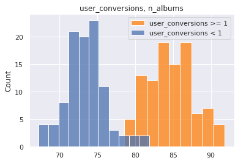
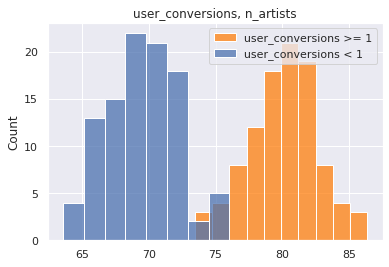


| target | feature | test stat | p-value | upper q avg | lower q avg | reject null | |
|---|---|---|---|---|---|---|---|
| 0 | listen_conversions | n_tracks | 10.791139 | 1.289400e-21 | 151.33751 | 143.74398 | True |
| 1 | listen_conversions | n_albums | 2.441572 | 1.550563e-02 | 78.52885 | 77.60380 | False |
| 2 | listen_conversions | n_local_tracks | -1.514198 | 1.315704e-01 | 2.04345 | 2.13447 | False |
| 3 | listen_conversions | n_artists | 1.186743 | 2.367580e-01 | 73.94089 | 73.48707 | False |
| 0 | user_conversions | n_artists | 29.009043 | 3.528897e-73 | 80.09057 | 69.51769 | True |
| 1 | user_conversions | n_albums | 27.865311 | 5.520382e-70 | 84.69724 | 73.45058 | True |
| 2 | user_conversions | n_tracks | 12.465380 | 1.108146e-26 | 150.70376 | 140.85719 | True |
| 3 | user_conversions | n_local_tracks | 3.208929 | 1.563093e-03 | 2.20957 | 2.02793 | False |
Conclusions¶
Discrete, Independent Variables¶
We note that there is class imbalance in the discrete independent variables:
fig, ax = plt.subplots(1, 2, figsize=(10,10))
dff = pd.DataFrame(df[des_features[0]].value_counts()).join(
pd.DataFrame(df[des_features[1]].value_counts())).join(
pd.DataFrame(df[des_features[2]].value_counts()))
dff = dff.reset_index().melt(id_vars='index')
dff.columns = ['mood', 'order', 'count']
sns.barplot(data=dff, hue='order', y='mood', x='count', orient='h', ax=ax[0])
dff = pd.DataFrame(df[des_features[3]].value_counts()).join(
pd.DataFrame(df[des_features[4]].value_counts())).join(
pd.DataFrame(df[des_features[5]].value_counts()))
dff = dff.reset_index().melt(id_vars='index')
dff.columns = ['genre', 'order', 'count']
sns.barplot(data=dff, hue='order', y='genre', x='count', orient='h', ax=ax[1])
plt.tight_layout()

This class imbalance can have a variety of effects (and might be derived from a variety of sources).
For example, users will have more choice when listening to popular genres likeIndie Rock and Rap, and less choice with genres like Blues and Easy listening. As it so happens, when we look to the relationship between genre/mood and the dependent variables, many of the genre/moods with smaller class sizes will have a positive multiplier effect on the dependent variable
Continuous, Independent Variables¶
The four continuous variables of focus in this dataset are highly tailed. Due to this, our statistical tests will require bootstrapping.
quant = 0.999
con_features = ['n_albums', 'n_artists', 'n_tracks', 'n_local_tracks']
for target in con_features:
cutoff = np.quantile(df[target], quant)
y = df.loc[df[target] < cutoff]
removed = df.loc[~(df[target] < cutoff)]
print(f"removed items: {removed.shape[0]}")
y.plot(kind='hist', y=target, bins=100, density=True)
plt.show()
removed items: 404

removed items: 405

removed items: 404

removed items: 406
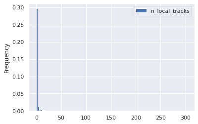
an example of bootstrapping n_albums
means = []
ind = con_features[0]
for i in range(100):
boot = random.sample(
list(
df.loc[
(df[ind] > 9)
& (df[ind] < 999)
][ind].values),
k=1000)
means.append(np.mean(boot))
stuff = plt.hist(means, bins=100, density=True)
Discrete, Dependent Variables¶
For the purposes of investigating a "successful" playlist, there are 5 primary metrics:
targets
['streams',
'stream30s',
'dau',
'wau',
'mau',
'mau_previous_month',
'mau_both_months',
'users',
'skippers',
'monthly_stream30s',
'monthly_owner_stream30s']
df[sub_targets].describe().round(1).to_excel("file.xlsx")
and "top" performers in each of these metrics were based on top 10% and top 1% quantiles:
print('p99 targets')
for target in sub_targets:
space = ' '* (20 - len(str(target)))
print(f"{target}: {space} {np.quantile(df[target], 0.99)}")
print()
print('p90 targets')
for target in sub_targets:
space = ' '* (20 - len(str(target)))
print(f"{target}: {space} {np.quantile(df[target], 0.90)}")
p99 targets
mau_previous_month: 130.0
mau_both_months: 19.0
mau: 143.0
monthly_stream30s: 2843.0
stream30s: 113.0
p90 targets
mau_previous_month: 9.0
mau_both_months: 2.0
mau: 9.0
monthly_stream30s: 432.0
stream30s: 17.0
You can imagine with these metrics, some concerns are:
- what if a playlist was made in the current month, or even current day?
- playlist is not properly represented by the data
- how do we normalize by playlists that already have a high visibility? i.e. what if a playlist is "good" but just isn't getting noticed?
- can compute conversion metrics:
- 30 second listens / total listens
- mau both months / mau previous month
- can compute conversion metrics:
While noting these shortcomings, to keep the analysis focused I singled out the previously mentioned targets, with a focus on monthly_stream30s as the north star metric. monthly_stream30s is advantageous as a nort star metric since it contains data from the entire month (reducing variance) only contains relevant listens (greater than 30 seconds long). Some disadvantages of this metric are that it doesn't account for just a few listeners who may be providing the majority of listens, and playlists that were made in the current month will be undervalued.
Dependency¶
Chi Square¶
In the chi-square test, the contigency table was used to calculate a multiplier effect. This is a ratio of ratios: the count of upper quantile over bottom quantile for the given group over the count of upper quantile over bottom quantile for non-group. In other words, it articulates how much more likely a sample in the given group is likely to be in the upper quantile vs a sample not in the given group
chisq_results = pd.read_csv("chi_square_results.csv", index_col=0)
chisq_results.head()
| target | upper q | upper q value | feature | group | chi | p-value | cTable | multiplier | reject null | rank | |
|---|---|---|---|---|---|---|---|---|---|---|---|
| 12 | stream30s | 0.99 | 113.0 | mood_3 | - | 125.854082 | 3.309444e-29 | [[397434 1935]\n [ 3927 70]] | 3.661181 | True | 0 |
| 11 | monthly_stream30s | 0.99 | 2843.0 | mood_2 | - | 109.163417 | 1.494430e-25 | [[397529 1804]\n [ 3969 64]] | 3.553294 | True | 0 |
| 67 | mau_previous_month | 0.90 | 9.0 | genre_1 | - | 95.863487 | 1.230846e-22 | [[365249 769]\n [ 37173 175]] | 2.236007 | True | 0 |
| 10 | monthly_stream30s | 0.99 | 2843.0 | mood_1 | - | 112.668942 | 2.549855e-26 | [[397605 1728]\n [ 3970 63]] | 3.651389 | True | 0 |
| 7 | stream30s | 0.99 | 113.0 | mood_1 | - | 141.501726 | 1.249779e-32 | [[397646 1723]\n [ 3929 68]] | 3.994277 | True | 0 |
chisq_results['target'].unique()
array(['stream30s', 'monthly_stream30s', 'mau_previous_month', 'mau',
'mau_both_months'], dtype=object)
chisq_results['upper q'].unique()
array([0.99, 0.9 ])
Taking together the five targets, the two upper quantiles, and the six categorical independent variables, we can identify which group occured the most frequently as a variable of influence:
chisq_results.loc[(chisq_results['feature'].str.contains('genre'))
& (chisq_results['group'] != '-')]['group'].value_counts()
Traditional 16
Children's 16
Jazz 14
Latin 12
Easy Listening 8
Soundtrack 8
New Age 7
Holiday 6
Spoken & Audio 4
Other 2
Name: group, dtype: int64
Using these value counts as a "rank" we can then groupby this rank and see how each group is influencing the propensity to be in the upper quadrant
Taking "Romantic" as an example, we see that it's multiplier effect is relatively consistent across the five targets and two quantiles:
sort_key = {i: j for i,j in zip(chisq_results['group'].value_counts().index.values, range(chisq_results['group'].nunique()))}
chisq_results['rank'] = chisq_results['group'].apply(lambda x: sort_key[x])
chisq_results.sort_values('rank', inplace=True)
# chisq_results.drop('rank', axis=1, inplace=True)
chisq_results.loc[chisq_results['group'] != '-'][:20]
| target | upper q | upper q value | feature | group | chi | p-value | cTable | multiplier | reject null | rank | |
|---|---|---|---|---|---|---|---|---|---|---|---|
| 3 | mau_both_months | 0.99 | 19.0 | mood_1 | Romantic | 109.693770 | 1.143607e-25 | [[390177 9231]\n [ 3766 192]] | 2.154933 | True | 1 |
| 5 | mau_previous_month | 0.90 | 9.0 | mood_2 | Romantic | 1379.938658 | 4.806442e-302 | [[357822 8196]\n [ 35327 2021]] | 2.497610 | True | 1 |
| 8 | stream30s | 0.99 | 113.0 | mood_1 | Romantic | 139.245969 | 3.891401e-32 | [[390152 9217]\n [ 3791 206]] | 2.300158 | True | 1 |
| 6 | mau_previous_month | 0.99 | 130.0 | mood_2 | Romantic | 104.434543 | 1.624732e-24 | [[389323 10013]\n [ 3826 204]] | 2.073152 | True | 1 |
| 6 | mau | 0.90 | 9.0 | mood_1 | Romantic | 1328.179994 | 8.498925e-291 | [[355892 7442]\n [ 38051 1981]] | 2.489700 | True | 1 |
| 5 | mau | 0.99 | 143.0 | mood_3 | Romantic | 122.574129 | 1.728356e-28 | [[389664 9685]\n [ 3810 207]] | 2.185929 | True | 1 |
| 10 | stream30s | 0.99 | 113.0 | mood_3 | Romantic | 136.025552 | 1.969792e-31 | [[389689 9680]\n [ 3785 212]] | 2.254825 | True | 1 |
| 6 | mau_previous_month | 0.90 | 9.0 | mood_1 | Romantic | 1142.816205 | 1.633755e-250 | [[358408 7610]\n [ 35535 1813]] | 2.402893 | True | 1 |
| 6 | monthly_stream30s | 0.99 | 2843.0 | mood_3 | Romantic | 149.750731 | 1.965370e-34 | [[389660 9673]\n [ 3814 219]] | 2.313066 | True | 1 |
| 4 | monthly_stream30s | 0.99 | 2843.0 | mood_1 | Romantic | 175.072639 | 5.772239e-40 | [[390131 9202]\n [ 3812 221]] | 2.457919 | True | 1 |
| 6 | mau | 0.99 | 143.0 | mood_2 | Romantic | 105.450504 | 9.729814e-25 | [[389336 10013]\n [ 3813 204]] | 2.080289 | True | 1 |
| 5 | mau_previous_month | 0.99 | 130.0 | mood_3 | Romantic | 112.605179 | 2.633191e-26 | [[389647 9689]\n [ 3827 203]] | 2.133192 | True | 1 |
| 6 | stream30s | 0.99 | 113.0 | mood_2 | Romantic | 148.026986 | 4.679851e-34 | [[389374 9995]\n [ 3775 222]] | 2.290974 | True | 1 |
| 2 | mau | 0.99 | 143.0 | mood_1 | Romantic | 202.823985 | 5.053546e-46 | [[390156 9193]\n [ 3787 230]] | 2.577588 | True | 1 |
| 7 | monthly_stream30s | 0.99 | 2843.0 | mood_2 | Romantic | 146.934024 | 8.112487e-34 | [[389339 9994]\n [ 3810 223]] | 2.280176 | True | 1 |
| 8 | mau_previous_month | 0.90 | 9.0 | mood_3 | Romantic | 1013.797108 | 1.800082e-222 | [[357949 8069]\n [ 35525 1823]] | 2.276429 | True | 1 |
| 4 | mau_previous_month | 0.99 | 130.0 | mood_1 | Romantic | 156.500834 | 6.579992e-36 | [[390127 9209]\n [ 3816 214]] | 2.375740 | True | 1 |
| 8 | mau | 0.90 | 9.0 | mood_3 | Romantic | 1170.355016 | 1.690629e-256 | [[355429 7905]\n [ 38045 1987]] | 2.348287 | True | 1 |
| 1 | mau | 0.90 | 9.0 | mood_2 | Romantic | 1531.190216 | 0.000000e+00 | [[355299 8035]\n [ 37850 2182]] | 2.549159 | True | 1 |
| 2 | mau | 0.90 | 9.0 | mood_1 | Lively | 2423.134070 | 0.000000e+00 | [[355493 7841]\n [ 37527 2505]] | 3.026380 | True | 2 |
chisq_results.loc[(chisq_results['group'] == 'Traditional')
& (chisq_results['target'] == 'monthly_stream30s')]
| target | upper q | upper q value | feature | group | chi | p-value | cTable | multiplier | reject null | rank | |
|---|---|---|---|---|---|---|---|---|---|---|---|
| 36 | monthly_stream30s | 0.99 | 2843.0 | genre_3 | Traditional | 29.032918 | 7.115879e-08 | [[396376 2957]\n [ 3973 60]] | 2.024364 | True | 3 |
| 27 | monthly_stream30s | 0.99 | 2843.0 | genre_2 | Traditional | 47.457479 | 5.621008e-12 | [[396211 3122]\n [ 3962 71]] | 2.274246 | True | 3 |
Let's use this idea of average multiplier effect, and average chi-square statistic to summarize by group.
Sorting by the test statistic, we see the top 5 most influential groups:
chisq_results.groupby('group')[['chi', 'multiplier', 'rank']].mean().sort_values('chi', ascending=False)[:10]
| chi | multiplier | rank | |
|---|---|---|---|
| group | |||
| Latin | 1686.610898 | 3.001282 | 6.0 |
| - | 766.884882 | 3.049100 | 0.0 |
| Sophisticated | 581.181538 | 2.055203 | 18.0 |
| Lively | 523.373076 | 2.364492 | 2.0 |
| Romantic | 493.442950 | 2.318001 | 1.0 |
| Soundtrack | 345.506268 | 2.209295 | 9.0 |
| Jazz | 323.657066 | 2.342954 | 5.0 |
| Fiery | 261.957158 | 2.244027 | 15.0 |
| Tender | 212.399270 | 3.033890 | 16.0 |
| Traditional | 176.194741 | 2.361342 | 3.0 |
Sorting instead by the multiplier, we can see which group has the heaviest influence
chisq_results.groupby('group')[['chi', 'multiplier', 'rank']].mean().sort_values('multiplier', ascending=False)[:10]
| chi | multiplier | rank | |
|---|---|---|---|
| group | |||
| - | 766.884882 | 3.049100 | 0.0 |
| Tender | 212.399270 | 3.033890 | 16.0 |
| Latin | 1686.610898 | 3.001282 | 6.0 |
| Children's | 165.058604 | 2.871261 | 4.0 |
| Holiday | 41.741338 | 2.836528 | 12.0 |
| New Age | 75.783147 | 2.754796 | 10.0 |
| Spoken & Audio | 163.859264 | 2.610393 | 14.0 |
| Peaceful | 61.046237 | 2.564297 | 13.0 |
| Other | 166.299708 | 2.425104 | 11.0 |
| Easy Listening | 99.533804 | 2.407295 | 8.0 |
Sorting instead by rank, we see which groups show up most frequently
chisq_results.groupby('group')[['chi', 'multiplier', 'rank']].mean().sort_values('rank', ascending=True)[:10]
| chi | multiplier | rank | |
|---|---|---|---|
| group | |||
| - | 766.884882 | 3.049100 | 0.0 |
| Romantic | 493.442950 | 2.318001 | 1.0 |
| Lively | 523.373076 | 2.364492 | 2.0 |
| Traditional | 176.194741 | 2.361342 | 3.0 |
| Children's | 165.058604 | 2.871261 | 4.0 |
| Jazz | 323.657066 | 2.342954 | 5.0 |
| Latin | 1686.610898 | 3.001282 | 6.0 |
| Serious | 103.700606 | 2.190306 | 7.0 |
| Easy Listening | 99.533804 | 2.407295 | 8.0 |
| Soundtrack | 345.506268 | 2.209295 | 9.0 |
chisq_results.loc[chisq_results['target'] == 'monthly_stream30s']
| target | upper q | upper q value | feature | group | chi | p-value | cTable | multiplier | reject null | rank | |
|---|---|---|---|---|---|---|---|---|---|---|---|
| 14 | monthly_stream30s | 0.99 | 2843.0 | mood_3 | - | 95.615882 | 1.394829e-22 | [[397392 1941]\n [ 3969 64]] | 3.301357 | True | 0 |
| 3 | monthly_stream30s | 0.99 | 2843.0 | genre_1 | - | 198.911522 | 3.608821e-45 | [[398442 891]\n [ 3980 53]] | 5.954979 | True | 0 |
| 10 | monthly_stream30s | 0.99 | 2843.0 | mood_1 | - | 112.668942 | 2.549855e-26 | [[397605 1728]\n [ 3970 63]] | 3.651389 | True | 0 |
| 11 | monthly_stream30s | 0.99 | 2843.0 | mood_2 | - | 109.163417 | 1.494430e-25 | [[397529 1804]\n [ 3969 64]] | 3.553294 | True | 0 |
| 6 | monthly_stream30s | 0.99 | 2843.0 | mood_3 | Romantic | 149.750731 | 1.965370e-34 | [[389660 9673]\n [ 3814 219]] | 2.313066 | True | 1 |
| 4 | monthly_stream30s | 0.99 | 2843.0 | mood_1 | Romantic | 175.072639 | 5.772239e-40 | [[390131 9202]\n [ 3812 221]] | 2.457919 | True | 1 |
| 7 | monthly_stream30s | 0.99 | 2843.0 | mood_2 | Romantic | 146.934024 | 8.112487e-34 | [[389339 9994]\n [ 3810 223]] | 2.280176 | True | 1 |
| 22 | monthly_stream30s | 0.99 | 2843.0 | mood_2 | Lively | 62.570224 | 2.571115e-15 | [[393976 5357]\n [ 3920 113]] | 2.120023 | True | 2 |
| 5 | monthly_stream30s | 0.99 | 2843.0 | mood_1 | Lively | 172.134248 | 2.529542e-39 | [[389222 10111]\n [ 3798 235]] | 2.381860 | True | 2 |
| 36 | monthly_stream30s | 0.99 | 2843.0 | genre_3 | Traditional | 29.032918 | 7.115879e-08 | [[396376 2957]\n [ 3973 60]] | 2.024364 | True | 3 |
| 27 | monthly_stream30s | 0.99 | 2843.0 | genre_2 | Traditional | 47.457479 | 5.621008e-12 | [[396211 3122]\n [ 3962 71]] | 2.274246 | True | 3 |
| 37 | monthly_stream30s | 0.99 | 2843.0 | genre_2 | Children's | 28.313598 | 1.031687e-07 | [[397689 1644]\n [ 3994 39]] | 2.362100 | True | 4 |
| 2 | monthly_stream30s | 0.99 | 2843.0 | genre_1 | Children's | 207.229586 | 5.524721e-47 | [[397760 1573]\n [ 3958 75]] | 4.791570 | True | 4 |
| 6 | monthly_stream30s | 0.90 | 432.0 | genre_1 | Children's | 262.624693 | 4.596280e-59 | [[361785 1286]\n [ 39933 362]] | 2.550270 | True | 4 |
| 16 | monthly_stream30s | 0.99 | 2843.0 | genre_2 | Jazz | 79.207991 | 5.590349e-19 | [[394671 4662]\n [ 3924 109]] | 2.351584 | True | 5 |
| 30 | monthly_stream30s | 0.99 | 2843.0 | genre_3 | Jazz | 39.188768 | 3.847472e-10 | [[395392 3941]\n [ 3953 80]] | 2.030414 | True | 5 |
| 0 | monthly_stream30s | 0.99 | 2843.0 | genre_1 | Latin | 537.892273 | 5.419582e-119 | [[384749 14584]\n [ 3605 428]] | 3.132127 | True | 6 |
| 0 | monthly_stream30s | 0.90 | 432.0 | genre_1 | Latin | 1150.625294 | 3.280867e-252 | [[350782 12289]\n [ 37572 2723]] | 2.068731 | True | 6 |
| 50 | monthly_stream30s | 0.99 | 2843.0 | mood_2 | Serious | 20.339173 | 6.485903e-06 | [[397730 1603]\n [ 3998 35]] | 2.172101 | True | 7 |
| 38 | monthly_stream30s | 0.99 | 2843.0 | genre_2 | Easy Listening | 28.186480 | 1.101715e-07 | [[397256 2077]\n [ 3987 46]] | 2.206712 | True | 8 |
| 29 | monthly_stream30s | 0.99 | 2843.0 | genre_1 | Easy Listening | 40.400033 | 2.069376e-10 | [[398435 898]\n [ 4004 29]] | 3.213550 | True | 8 |
| 20 | monthly_stream30s | 0.99 | 2843.0 | genre_1 | Soundtrack | 66.073066 | 4.345131e-16 | [[392575 6758]\n [ 3897 136]] | 2.027276 | True | 9 |
| 28 | monthly_stream30s | 0.99 | 2843.0 | genre_1 | New Age | 43.730647 | 3.768245e-11 | [[397202 2131]\n [ 3980 53]] | 2.482109 | True | 10 |
| 12 | monthly_stream30s | 0.90 | 432.0 | genre_1 | New Age | 166.484617 | 4.335181e-38 | [[361286 1785]\n [ 39896 399]] | 2.024214 | True | 10 |
| 21 | monthly_stream30s | 0.99 | 2843.0 | genre_3 | New Age | 63.004025 | 2.062846e-15 | [[397632 1701]\n [ 3982 51]] | 2.993960 | True | 10 |
| 15 | monthly_stream30s | 0.99 | 2843.0 | genre_2 | New Age | 85.761620 | 2.029879e-20 | [[397614 1719]\n [ 3976 57]] | 3.315998 | True | 10 |
| 33 | monthly_stream30s | 0.99 | 2843.0 | mood_1 | Other | 30.443472 | 3.437382e-08 | [[397678 1655]\n [ 3993 40]] | 2.407101 | True | 11 |
| 11 | monthly_stream30s | 0.90 | 432.0 | mood_1 | Other | 197.598843 | 6.979647e-45 | [[361719 1352]\n [ 39952 343]] | 2.296943 | True | 11 |
| 26 | monthly_stream30s | 0.99 | 2843.0 | mood_1 | Peaceful | 47.834009 | 4.638752e-12 | [[397055 2278]\n [ 3976 57]] | 2.498765 | True | 13 |
| 17 | monthly_stream30s | 0.99 | 2843.0 | mood_3 | Peaceful | 69.964512 | 6.038104e-17 | [[396736 2597]\n [ 3963 70]] | 2.698383 | True | 13 |
| 12 | monthly_stream30s | 0.99 | 2843.0 | mood_2 | Peaceful | 99.188851 | 2.295356e-23 | [[396395 2938]\n [ 3948 85]] | 2.904813 | True | 13 |
| 52 | monthly_stream30s | 0.99 | 2843.0 | genre_1 | Spoken & Audio | 19.783961 | 8.670724e-06 | [[398209 1124]\n [ 4006 27]] | 2.387798 | True | 14 |
| 19 | monthly_stream30s | 0.90 | 432.0 | genre_1 | Spoken & Audio | 120.508309 | 4.896128e-28 | [[362147 924]\n [ 40068 227]] | 2.220451 | True | 14 |
| 1 | monthly_stream30s | 0.99 | 2843.0 | mood_1 | Tender | 218.759022 | 1.686848e-49 | [[396180 3153]\n [ 3916 117]] | 3.754151 | True | 16 |
| 23 | monthly_stream30s | 0.99 | 2843.0 | mood_2 | Easygoing | 61.911050 | 3.593275e-15 | [[394661 4672]\n [ 3931 102]] | 2.191889 | True | 17 |
| 25 | monthly_stream30s | 0.99 | 2843.0 | mood_3 | Easygoing | 49.108110 | 2.422366e-12 | [[394265 5068]\n [ 3931 102]] | 2.018593 | True | 17 |
| 34 | monthly_stream30s | 0.99 | 2843.0 | mood_3 | Somber | 29.620347 | 5.255040e-08 | [[397107 2226]\n [ 3984 49]] | 2.194114 | True | 19 |
It creates some fog to jumble together mood/genres this way. We can instead separate them and ask questions like:
What is the most influential primary genre on monthly streams over 30 seconds?¶
Answer: Children's followed by Latin
Reason: both genre's appear as influential in other guardrail metrics (high rank), have high test statistics, and are influential in both p99 and p90 with multiplier effects of [4.8, 2.6] and [3.1, 2.1], respectively.
chisq_results.loc[(chisq_results['feature'] == 'genre_1')
& (chisq_results['target'] == 'monthly_stream30s')]
| target | upper q | upper q value | feature | group | chi | p-value | cTable | multiplier | reject null | rank | |
|---|---|---|---|---|---|---|---|---|---|---|---|
| 3 | monthly_stream30s | 0.99 | 2843.0 | genre_1 | - | 198.911522 | 3.608821e-45 | [[398442 891]\n [ 3980 53]] | 5.954979 | True | 0 |
| 2 | monthly_stream30s | 0.99 | 2843.0 | genre_1 | Children's | 207.229586 | 5.524721e-47 | [[397760 1573]\n [ 3958 75]] | 4.791570 | True | 4 |
| 6 | monthly_stream30s | 0.90 | 432.0 | genre_1 | Children's | 262.624693 | 4.596280e-59 | [[361785 1286]\n [ 39933 362]] | 2.550270 | True | 4 |
| 0 | monthly_stream30s | 0.99 | 2843.0 | genre_1 | Latin | 537.892273 | 5.419582e-119 | [[384749 14584]\n [ 3605 428]] | 3.132127 | True | 6 |
| 0 | monthly_stream30s | 0.90 | 432.0 | genre_1 | Latin | 1150.625294 | 3.280867e-252 | [[350782 12289]\n [ 37572 2723]] | 2.068731 | True | 6 |
| 29 | monthly_stream30s | 0.99 | 2843.0 | genre_1 | Easy Listening | 40.400033 | 2.069376e-10 | [[398435 898]\n [ 4004 29]] | 3.213550 | True | 8 |
| 20 | monthly_stream30s | 0.99 | 2843.0 | genre_1 | Soundtrack | 66.073066 | 4.345131e-16 | [[392575 6758]\n [ 3897 136]] | 2.027276 | True | 9 |
| 28 | monthly_stream30s | 0.99 | 2843.0 | genre_1 | New Age | 43.730647 | 3.768245e-11 | [[397202 2131]\n [ 3980 53]] | 2.482109 | True | 10 |
| 12 | monthly_stream30s | 0.90 | 432.0 | genre_1 | New Age | 166.484617 | 4.335181e-38 | [[361286 1785]\n [ 39896 399]] | 2.024214 | True | 10 |
| 52 | monthly_stream30s | 0.99 | 2843.0 | genre_1 | Spoken & Audio | 19.783961 | 8.670724e-06 | [[398209 1124]\n [ 4006 27]] | 2.387798 | True | 14 |
| 19 | monthly_stream30s | 0.90 | 432.0 | genre_1 | Spoken & Audio | 120.508309 | 4.896128e-28 | [[362147 924]\n [ 40068 227]] | 2.220451 | True | 14 |
What is the most influential primary mood on monthly streams over 30 seconds?¶
Answer: Romantic and Lively
Reason: Romantic and Lively moods appear multiple times as highly influential (high rank) they have high multipliers. A contendent may be Tender, as it has a high multiplier effect as well at 3.75
chisq_results.loc[(chisq_results['feature'] == 'mood_1')
& (chisq_results['target'] == 'monthly_stream30s')]
| target | upper q | upper q value | feature | group | chi | p-value | cTable | multiplier | reject null | rank | |
|---|---|---|---|---|---|---|---|---|---|---|---|
| 10 | monthly_stream30s | 0.99 | 2843.0 | mood_1 | - | 112.668942 | 2.549855e-26 | [[397605 1728]\n [ 3970 63]] | 3.651389 | True | 0 |
| 4 | monthly_stream30s | 0.99 | 2843.0 | mood_1 | Romantic | 175.072639 | 5.772239e-40 | [[390131 9202]\n [ 3812 221]] | 2.457919 | True | 1 |
| 5 | monthly_stream30s | 0.99 | 2843.0 | mood_1 | Lively | 172.134248 | 2.529542e-39 | [[389222 10111]\n [ 3798 235]] | 2.381860 | True | 2 |
| 33 | monthly_stream30s | 0.99 | 2843.0 | mood_1 | Other | 30.443472 | 3.437382e-08 | [[397678 1655]\n [ 3993 40]] | 2.407101 | True | 11 |
| 11 | monthly_stream30s | 0.90 | 432.0 | mood_1 | Other | 197.598843 | 6.979647e-45 | [[361719 1352]\n [ 39952 343]] | 2.296943 | True | 11 |
| 26 | monthly_stream30s | 0.99 | 2843.0 | mood_1 | Peaceful | 47.834009 | 4.638752e-12 | [[397055 2278]\n [ 3976 57]] | 2.498765 | True | 13 |
| 1 | monthly_stream30s | 0.99 | 2843.0 | mood_1 | Tender | 218.759022 | 1.686848e-49 | [[396180 3153]\n [ 3916 117]] | 3.754151 | True | 16 |
Which Categorical Feature is most influential overall?¶
Answer: genre_1, followed by genre_2 and mood_1
Reason: we see that these features appear multiple times across the 5 different targets and 2 different quantiles
chisq_results['feature'].value_counts()
genre_1 48
genre_2 39
mood_1 34
mood_2 28
mood_3 17
genre_3 16
Name: feature, dtype: int64
What are the shortcomings of this analysis?¶
We haven't taken into account confounding variables. For example, perhaps Latin genre is typically associated with Lively mood. Then which variable is it that actually contributes to a highly performing playlist? We have strategies for dealing with this. We can stratify the confounding variables by over or under sampling. We can also consider them together in a forward selection logistic model. We will take the latter approach later on in the analysis.
We haven't considered the categorical variables alongside the continuous variables, so we don't know how they fit overall in terms of relative improtance. We will approach this the same way as the confounding variables issue, and incorporate all variables in a logistic regression.
t-Test¶
ttest_results = pd.read_csv("t_test_results.csv", index_col=0)
ttest_results.head()
| target | feature | test stat | p-value | upper q avg | lower q avg | reject null | |
|---|---|---|---|---|---|---|---|
| 0 | mau_previous_month | n_albums | -25.318099 | 4.772854e-63 | 69.77939 | 78.70629 | True |
| 1 | mau_previous_month | n_artists | -15.418330 | 9.408966e-36 | 68.08641 | 73.90254 | True |
| 2 | mau_previous_month | n_local_tracks | -9.550137 | 7.728853e-18 | 1.60489 | 2.07692 | True |
| 3 | mau_previous_month | n_tracks | 6.086774 | 5.913654e-09 | 149.50371 | 145.10534 | True |
| 0 | mau_both_months | n_artists | 52.402365 | 2.845239e-114 | 91.41907 | 71.97618 | True |
Models¶
log_results = pd.read_csv("../../scripts/fwd_selection_results.txt", header=None, index_col=0)
log_results.columns = ['feature', 'pseudo r2']
log_results.reset_index(inplace=True, drop=True)
log_results.drop(0, axis=0, inplace=True)
log_results
| feature | pseudo r2 | |
|---|---|---|
| 1 | intercept | 2.197000e-12 |
| 2 | n_albums | 2.614000e-02 |
| 3 | genre_1_Latin | 3.093000e-02 |
| 4 | genre_1_Indie Rock | 3.274000e-02 |
| 5 | genre_1_Rap | 3.431000e-02 |
| 6 | genre_1_Dance & House | 3.568000e-02 |
| 7 | genre_1_Rock | 3.674000e-02 |
| 8 | mood_1_Energizing | 3.772000e-02 |
| 9 | genre_1_Children's | 3.863000e-02 |
| 10 | mood_1_Tender | 3.931000e-02 |
| 11 | mood_1_Other | 3.995000e-02 |
| 12 | n_tracks | 4.052000e-02 |
| 13 | mood_1_Peaceful | 4.106000e-02 |
| 14 | mood_1_Romantic | 4.161000e-02 |
| 15 | genre_1_Electronica | 4.208000e-02 |
| 16 | genre_2_Indie Rock | 4.248000e-02 |
| 17 | mood_2_Energizing | 4.287000e-02 |
| 18 | genre_1_R&B | 4.319000e-02 |
| 19 | genre_3_Indie Rock | 4.353000e-02 |
| 20 | genre_1_Classical | 4.379000e-02 |
| 21 | genre_2_Alternative | 4.403000e-02 |
| 22 | genre_2_Metal | 4.427000e-02 |
| 23 | mood_2_Peaceful | 4.449000e-02 |
| 24 | mood_2_Romantic | 4.472000e-02 |
| 25 | mood_3_Romantic | 4.498000e-02 |
| 26 | genre_3_Alternative | 4.522000e-02 |
target = "monthly_stream30s"
y = df[target].values
labels = y.copy()
names = []
weights = y.copy()
weights.dtype = 'float'
lim = 11
dom_class_weight = 1 / (lim - 1 - 1)
for idx, quant in zip(range(lim), np.linspace(0, 1, num=lim)):
if idx < lim - 2:
prev = quant
continue
elif idx == lim - 2:
weights[y <= np.quantile(y, quant)] = dom_class_weight
labels[labels <= np.quantile(y, quant)] = 0
names += [f"less than {np.quantile(y, quant):.0f} listens"]
else:
labels[(labels > np.quantile(y, prev))
& (labels <= np.quantile(y, quant))] = 1
weights[(y > np.quantile(y, prev))
& (y <= np.quantile(y, quant))] = 1.0
names += [f"{np.quantile(y, prev):.0f} < listens <= {np.quantile(y, quant):.0f}"]
prev = quant
y = labels
basemodel = pd.read_csv("../../scripts/basemodel.csv", index_col = 0)
X2 = basemodel.values
est = Logit(y, X2)
est2 = est.fit(disp=0)
summ = est2.summary()
res_table = summ.tables[1]
res_df = pd.DataFrame(res_table.data)
cols = res_df.iloc[0]
cols = [str(i) for i in cols]
res_df.drop(0, axis=0, inplace=True)
res_df.set_index(0, inplace=True)
res_df.columns = cols[1:]
res_df.index = basemodel.columns
res_df
| coef | std err | z | P>|z| | [0.025 | 0.975] | |
|---|---|---|---|---|---|---|
| intercept | -2.0919 | 0.012 | -180.211 | 0.000 | -2.115 | -2.069 |
| n_albums | 0.2659 | 0.012 | 21.370 | 0.000 | 0.241 | 0.290 |
| genre_1_Latin | 0.5389 | 0.025 | 21.354 | 0.000 | 0.489 | 0.588 |
| genre_1_Indie Rock | -0.5919 | 0.020 | -30.130 | 0.000 | -0.630 | -0.553 |
| genre_1_Rap | -0.3552 | 0.018 | -19.651 | 0.000 | -0.391 | -0.320 |
| genre_1_Dance & House | -0.3364 | 0.023 | -14.444 | 0.000 | -0.382 | -0.291 |
| genre_1_Rock | -0.4325 | 0.024 | -18.072 | 0.000 | -0.479 | -0.386 |
| mood_1_Energizing | -0.3012 | 0.026 | -11.592 | 0.000 | -0.352 | -0.250 |
| genre_1_Children's | 0.7694 | 0.061 | 12.545 | 0.000 | 0.649 | 0.890 |
| mood_1_Tender | 0.6086 | 0.053 | 11.496 | 0.000 | 0.505 | 0.712 |
| mood_1_Other | 0.8435 | 0.062 | 13.497 | 0.000 | 0.721 | 0.966 |
| n_tracks | 0.0465 | 0.006 | 7.665 | 0.000 | 0.035 | 0.058 |
| mood_1_Peaceful | 0.7355 | 0.057 | 12.849 | 0.000 | 0.623 | 0.848 |
| mood_1_Romantic | 0.3608 | 0.032 | 11.187 | 0.000 | 0.298 | 0.424 |
| genre_1_Electronica | -0.2585 | 0.033 | -7.726 | 0.000 | -0.324 | -0.193 |
| genre_2_Indie Rock | -0.2338 | 0.022 | -10.617 | 0.000 | -0.277 | -0.191 |
| mood_2_Energizing | -0.1235 | 0.018 | -6.837 | 0.000 | -0.159 | -0.088 |
| genre_1_R&B | -0.2373 | 0.030 | -7.999 | 0.000 | -0.295 | -0.179 |
| genre_3_Indie Rock | -0.1994 | 0.022 | -8.880 | 0.000 | -0.243 | -0.155 |
| genre_1_Classical | -0.5369 | 0.059 | -9.114 | 0.000 | -0.652 | -0.421 |
| genre_2_Alternative | 0.1578 | 0.018 | 8.915 | 0.000 | 0.123 | 0.192 |
| genre_2_Metal | 0.3654 | 0.039 | 9.356 | 0.000 | 0.289 | 0.442 |
| mood_2_Peaceful | 0.4354 | 0.053 | 8.150 | 0.000 | 0.331 | 0.540 |
| mood_2_Romantic | 0.2643 | 0.031 | 8.628 | 0.000 | 0.204 | 0.324 |
| mood_3_Romantic | 0.2600 | 0.031 | 8.363 | 0.000 | 0.199 | 0.321 |
| genre_3_Alternative | 0.1152 | 0.018 | 6.548 | 0.000 | 0.081 | 0.150 |
| n_artists | 0.0968 | 0.013 | 7.587 | 0.000 | 0.072 | 0.122 |
| genre_1_Metal | 0.3371 | 0.041 | 8.282 | 0.000 | 0.257 | 0.417 |
| mood_1_Aggressive | -0.2743 | 0.041 | -6.671 | 0.000 | -0.355 | -0.194 |
| mood_3_Peaceful | 0.3313 | 0.057 | 5.778 | 0.000 | 0.219 | 0.444 |
| mood_1_Empowering | 0.1344 | 0.020 | 6.801 | 0.000 | 0.096 | 0.173 |
| genre_1_Religious | -0.1832 | 0.032 | -5.799 | 0.000 | -0.245 | -0.121 |
| genre_3_Metal | 0.2308 | 0.043 | 5.361 | 0.000 | 0.146 | 0.315 |
| genre_3_R&B | -0.1163 | 0.022 | -5.238 | 0.000 | -0.160 | -0.073 |
The simplified, final approach¶